-
- 改版履歴
- 2020年2月20日 2020年度版 作成
- 2019年6月12日 詳細内容・図表更新
- 2019年6月4日 提出版
- 2019年5月29日 「DX時代における図書館サービスイメージ」更新
- 2019年5月14日 「社会の変革と今後のサービス」更新
- 2019年5月9日 文化芸術関連追加
- 2019年5月7日
 目次
目次- 社会の変革と今後のサービス
- DAP34次世代サービスの構築のために（関連図）
- 企業改革・働き方改革の基本姿勢
- 第4次産業革命
- DX/AI時代のタスク、 必要な能力
- Society5.0時代に普及が見込まれる次世代技術・サービス・手法
- サイバーセキュリティ

- 国の施策とドキュメント
- 全体方針
- 経済再生
- 文化芸術関連
- 科学技術
- 知的財産
- IT関連
- セキュリティ
- 人材育成
- デジタルアーカイブジャパン、 ジャパンサーチ
- 2016年頃までの歩み
- 2017年以降の歩み
- DX時代における図書館サービスイメージ
- 社会の知識インフラの中核として
- 未来の図書館の実現に向けて
- あらゆる分野、 業種業態を越えた情報資源を一元的に利用できるアーカイブ
- Society5.0にマッピングした図書館サービス
- ナレッジプラットフォームfor SDGs【 知的財産戦略ビジョンより】
- 次世代のコンテンツ創造・活用システムの構築【 知的財産戦略ビジョンより】
- 公共図書館等のシステム構成イメージ
- 図書館関連機関が保有しているビッグデータとしての知的情報資源
- ナショナルアーカイブの方向性
- 次世代の図書館サービスの業務と、 業務に従事する人材の資質とスキルは？
- 資料編
- 課題
- 社会の変革と今後のサービス
 DAP34次世代サービスの構築のために（関連図）
DAP34次世代サービスの構築のために（関連図）- 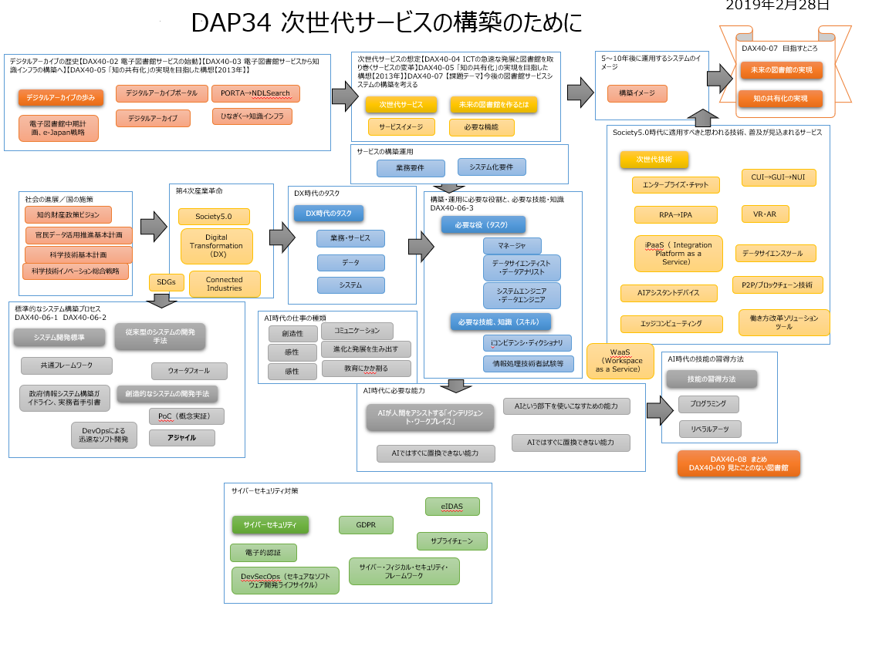
- 企業改革・働き方改革の基本姿勢
- ワークライフバランスから、 ワークライフインテグレーションヘ
- 「ワークライフバランス（仕事と生活の両立）」という言葉に代わって、 近年アメリカで提唱されている新しい働き方の概念が、 「ワークライフンテグレーション（仕事と生活の統合） 」
- 限られた時間をいかに自分が納得できるように使うか、 その時その時を最大限に集中して過ごせるか、 という心得
- この「ワークライフインテグレーション」の概念こそ、 AI時代における人間らしい働き方ではないか
- 「自分でなくてもできること」をどんどんAIに任せて自分はビジネスやランニング、 勉強といった「自分にしかできないこと」をやる。
- 詳細
-
 2020年に向けて企業が開始すべきIT関連行動（ガ―トナー）
2020年に向けて企業が開始すべきIT関連行動（ガ―トナー）-
- 「システム開発・運用」
- 「生産性向上や効率化を実現する有効な手段としてITの活用があり、 『付加価値を生まない時間の削減』を実現するために、 テクノロジーやツールを活用する必要がある」
- 「デジタルワークプレース」
- 「従来は、 機器やデータを社外に持ち出させないセキュリティ対策が採られてきた」と分析しており、 今後は新たな技術を組み合わせることで、 ユーザーの利便性や生産性を損なわずにセキュリティ対策を実施できる
- 「デジタルトランスフォーメーション」
- 世界ではデジタルトランスフォーメーションが急速に進んでいるのに対して、 日本では十分なスピード感をもって対応できているとは言い難い状況
- 「サイバーセキュリティとプライバシー」
- 「こうしたイベントを好機と捉え、 国内外の脅威や対策の傾向を理解し、 変化にキャッチアップし、 自社のセキュリティ体制の強化を図る必要がある」
- 「情報銀行」
- まとめ
- 「今後のデジタルトレンドによってもたらされる、 かつてない競争や環境変化に対応するためには、 人材面で新しいリテラシーやスキル、 マインドセット、 スタイルが不可欠だ。 このためには相当な時間とエネルギーが必要で、 数年たってようやく重い腰を上げるといったやり方は、 それ自体が大きなリスクになる。 従って企業は、 2019年に人材投資などの具体策に基づく人材の競争力強化に、 速やかに着手すべきだ」
- 【詳細】
-
- ダイバーシティ＆インクルージョン(D&I)
- ダイバーシティ
- 人種や国籍、 性別、 性格、 学歴などにとらわれず、 多様な人材を活かされること
- インクルージョン
- 企業内すべての従業員が仕事に参画する機会を持ち、 それぞれの経験や能力、 考え方が認められ活かされていること
- 第4次産業革命
- 参考
- 第4次産業革命＝インダストリー4.0（2011年ドイツ）≒Connected Industries（2017年3月20日 日本 経済産業省）
- 社会・技術・産業の在り方の変化（Society5.0への流れ）
- Society5.0・Connected Industriesを実現する「新産業構造ビジョン」

 インダストリー4.0
インダストリー4.0- サイバーフィジカルシステム(CPS)、 モノのインターネット(IoT)、 クラウドコンピューティング、 コグニティブコンピューティングなどが含まれる。 インダストリー4.0は一般に第四次産業革命として言及される【引用：Wikipedia】
- 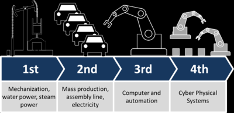
- 概要【引用：Wikipedia】
- サイバーフィジカルシステムを導入した「スマートファクトリーの実現」がインダストリー4.0の根幹である。 モジュール構造化されたスマートファクトリ内部では、 サイバーフィジカルシステムが現実の工程を監視制御すると共に、 実世界の仮想コピー(virtual copy)を作成して分散型決定（後述）を下していく。 生産工程や流通工程のデジタル化により、 生産や流通の自動化、 バーチャル化を大幅に高めることで、 生産コストと流通コストを極小化し、 生産性を向上させることを主眼に置いている。
-
- 設計原則【引用：Wikipedia】
- 相互運用性(Interoperability)
- -モノのインターネット(IoT)またはヒトのインターネット(IoH)を介して、 機械、 デバイス、 センサーおよび人間が相互に接続し通信を行う。
- 情報透明性(Information transparency)
- -インダストリー4.0の技術によって与えられる透明性は、 適切な決定を下すために必要とされる膨大な量の役立つ情報を運営者に提供する。 相互運用性のおかげでオペレーターは製造工程のあらゆる段階から膨大な量のデータや情報を収集でき、 したがって機能性を補助したり、 革新や改善から恩恵を受けられる重要分野を認識することになる。
- 技術的補助(Technical assistance)
- -第一に、 情報に基づいた意思決定を行って緊急の問題を急いで解決するため、 情報を総合的に集約および視覚化することによって人間をサポートする補助システムの機能。 第二に、 人間にとって不快で、 重労働で、 安全でない一連の業務をサイバーフィジカルシステムが実施することによって、 人間を物理的にサポートする機能のこと。
- 分散型決定(Decentralized decisions)
- -サイバーフィジカルシステムが自ら決定を下し、 可能な限り自律的に業務を実行する機能。 ただし例外事項や障害事案、 相反する目標がある場合のみ、 より高位レベルに業務権限を委譲する。
- Society5.0
- 概念
- 狩猟社会、 農耕社会、 工業社会、 情報社会に続くような新たな社会を生み出す変革を科学技術イノベーションが先導していく、 という概念である。
- 内閣府資料
- Society 5.0とは

-
- サイバー空間（仮想空間）とフィジカル空間（現実空間）を高度に融合させたシステムにより、 経済発展と社会的課題の解決を両立する、 人間中心の社会（Society）
- Society 5.0とは 狩猟社会（Society 1.0）、 農耕社会（Society 2.0）、 工業社会（Society 3.0）、 情報社会（Society 4.0）に続く、 新たな社会を指すもので、 第５期科学技術基本計画において我が国が目指すべき未来社会の姿として初めて提唱されました。
- Society 5.0で実現する社会

-
- これまでの情報社会（Society 4.0）では知識や情報が共有されず、 分野横断的な連携が不十分であるという問題がありました。 人が行う能力に限界があるため、 あふれる情報から必要な情報を見つけて分析する作業が負担であったり、 年齢や障害などによる労働や行動範囲に制約がありました。 また、 少子高齢化や地方の過疎化などの課題に対して様々な制約があり、 十分に対応することが困難でした。
- Society 5.0で実現する社会は、 IoT（Internet of Things）で全ての人とモノがつながり、 様々な知識や情報が共有され、 今までにない新たな価値を生み出すことで、 これらの課題や困難を克服します。 また、 人工知能（AI）により、 必要な情報が必要な時に提供されるようになり、 ロボットや自動走行車などの技術で、 少子高齢化、 地方の過疎化、 貧富の格差などの課題が克服されます。 社会の変革（イノベーション）を通じて、 これまでの閉塞感を打破し、 希望の持てる社会、 世代を超えて互いに尊重し合あえる社会、 一人一人が快適で活躍できる社会となります。
- Society 5.0のしくみ

-
- Society 5.0は、 サイバー空間（仮想空間）とフィジカル空間（現実空間）を高度に融合させたシステムにより実現します。 これまでの情報社会（Society 4.0）では、 人がサイバー空間に存在するクラウドサービス（データベース）にインターネットを経由してアクセスして、 情報やデータを入手し、 分析を行ってきました。
- Society 5.0では、 フィジカル空間のセンサーからの膨大な情報がサイバー空間に集積されます。 サイバー空間では、 このビッグデータを人工知能（AI）が解析し、 その解析結果がフィジカル空間の人間に様々な形でフィードバックされます。 今までの情報社会では、 人間が情報を解析することで価値が生まれてきました。 Society 5.0では、 膨大なビッグデータを人間の能力を超えたAIが解析し、 その結果がロボットなどを通して人間にフィードバックされることで、 これまでには出来なかった新たな価値が産業や社会にもたらされることになります。
- 経済発展と社会的課題の解決を両立するSociety 5.0へ

-
- 我が国そして世界を取り巻く環境は大きな変革期にあるといえます。 経済発展が進む中、 人々の生活は便利で豊かになり、 エネルギーや食料の需要が増加し、 寿命の延伸が達成され、 高齢化が進んでいます。 また、 経済のグローバル化が進み、 国際的な競争も激化し、 富の集中や地域間の不平等といった面も生じてきています。 これら経済発展に相反（トレードオフ）して解決すべき社会的課題は複雑化してきており、 温室効果ガス（GHG）排出の削減、 食料の増産やロスの削減、 高齢化などに伴う社会コストの抑制、 持続可能な産業化の推進、 富の再配分や地域間の格差是正といった対策が必要になってきています。 しかしながら、 現在の社会システムでは経済発展と社会的課題の解決を両立することは困難な状況になってきています。
- このように世界が大きく変化する一方で、 IoT、 ロボット、 人工知能（AI)、 ビッグデータといった社会の在り方に影響を及ぼす新たな技術の進展が進んできており、 我が国は、 課題先進国として、 これら先端技術をあらゆる産業や社会生活に取り入れ、 経済発展と社会的課題の解決を両立していく新たな社会であるSociety 5.0の実現を目指しています。
- 新たな価値で経済発展と社会的課題の解決を両立

-
- イノベーションで創出される新たな価値により、 地域、 年齢、 性別、 言語等による格差がなくなり、 個々の多様なニーズ、 潜在的なニーズに対して、 きめ細かな対応が可能となります。 モノやサービスを、 必要な人に、 必要な時に、 必要なだけ提供されるとともに、 社会システム全体が最適化され、 経済発展と社会的課題の解決を両立していける社会となります。 その実現には様々な困難を伴いますが、 我が国はこの克服に果敢にチャレンジし、 課題先進国として世界に先駆けて模範となる未来社会を示していこうとしています。
- 各分野における新たな価値の事例

-
- これまでの社会では、 経済や組織といったシステムが優先され、 個々の能力などに応じて個人が受けるモノやサービスに格差が生じている面がありました。 Society 5.0では、 ビッグデータを踏まえたAIやロボットが今まで人間が行っていた作業や調整を代行・支援するため、 日々の煩雑で不得手な作業などから解放され、 誰もが快適で活力に満ちた質の高い生活を送ることができるようになります。
- これは一人一人の人間が中心となる社会であり、 決してAIやロボットに支配され、 監視されるような未来ではありません。 また、 我が国のみならず世界の様々な課題の解決にも通じるもので、 国連の「持続可能な開発目標」(Sustainable Development Goals：SDGs)の達成にも通じるものです。
- 我が国は、 先端技術をあらゆる産業や社会生活に取り入れ、 イノベーションから新たな価値が創造されることにより、 誰もが快適で活力に満ちた質の高い生活を送ることのできる人間中心の社会「Society 5.0」を世界に先駆けて実現していきます。
-
- 新たな価値の事例（交通）
- 新たな価値の事例（医療・介護）
- 新たな価値の事例（ものづくり）
- 新たな価値の事例（農業）
- 新たな価値の事例（食品）
- 新たな価値の事例（防災）
- 新たな価値の事例（エネルギー）
- SDGs
- SDGsとは
- 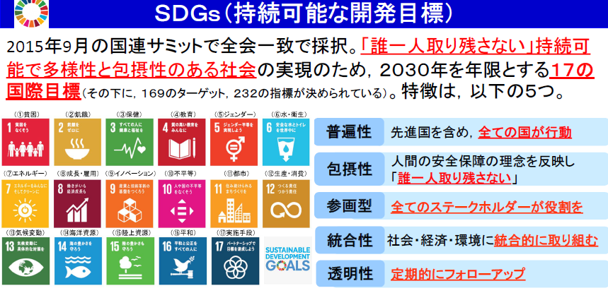
-
- 解説
- 国連の「持続可能な開発目標」(Sustainable Development Goals：SDGs)
- 2001年に策定されたミレニアム開発目標（MDGs）の後継として，2015年9月の国連サミットで採択された「持続可能な開発のための2030アジェンダ」にて記載された2016年から2030年までの国際目標です。
- 持続可能な世界を実現するための17のゴール・169のターゲットから構成され，地球上の誰一人として取り残さない（leave no one behind）ことを誓っています。
- SDGsは発展途上国のみならず，先進国自身が取り組むユニバーサル（普遍的）なものであり，日本としても積極的に取り組んでいます。
-
- Society5.0との関係
-
-
- これまでの社会では、 経済や組織といったシステムが優先され、 個々の能力などに応じて個人が受けるモノやサービスに格差が生じている面がありました。 Society 5.0では、 ビッグデータを踏まえたAIやロボットが今まで人間が行っていた作業や調整を代行・支援するため、 日々の煩雑で不得手な作業などから解放され、 誰もが快適で活力に満ちた質の高い生活を送ることができるようになります。
- これは一人一人の人間が中心となる社会であり、 決してAIやロボットに支配され、 監視されるような未来ではありません。 また、 我が国のみならず世界の様々な課題の解決にも通じるもので、 国連の「持続可能な開発目標」(Sustainable Development Goals：SDGs)の達成にも通じるものです。
- 我が国は、 先端技術をあらゆる産業や社会生活に取り入れ、 イノベーションから新たな価値が創造されることにより、 誰もが快適で活力に満ちた質の高い生活を送ることのできる人間中心の社会「Society 5.0」を世界に先駆けて実現していきます。
-
-
- 企業改革D&Iダイバーシティ＆インクルージョン
- 詳細
- Connected Industries
- 第四次産業革命による技術の革新を踏まえて、 将来的に目指すべき未来社会である「Society5.0」を実現していくため、 様々な繋がりによって新たな付加価値の創出や社会課題の解決がもたらす、 「Connected Industries」を実現していくため、 今後官民で取組を進めている。 【引用:METI】
- 「モノとモノ」「人と機械」「人と技術」「企業と企業」「人と人」「生産者と消費者」など、 国境や世代を超えたさまざまなつながりによって新たな付加価値を生み出していく産業社会を指す。
- Digital Transformation（DX)
- スウェーデンのウメオ大学のエリック・ストルターマン教授が2004年に唱えた考え方で、 「デジタル技術による人々の生活の変革」と定義されている。
-
- デジタルトランスフォーメーションとデジタライゼーションの違い

-
- デジタイゼーション（Digitization）とは「デジタル変換」
- 利用媒体がレコードからCDに置き変わる
- 設計図面をデジタル化して部分的にコンピュータで処理する
- デジタイゼーションはこうした、 アナログ作業の一部をデジタルに置き換えることに主眼が置かれていた。
- デジタライゼーション（Digitalization）とは「プロセス全体の完全デジタル化」
- 例えば、 産業機械の試作品開発を、 これまで手作業で製作していたプロセスから、 全てデジタル化することで何倍もの速度で反復改善ができる様にした事例はDX事例と言える。
- つまり、 部分的な効率化ではなく、 プロセス全体をデジタルに置き換えることにDXの本質がある。 そのためDXをプロセスイノベーションの一つとして捉えている学説も存在する
- プロセスイノベーションの視点で見たDX事例
- アイデアを製品化するプロセスの変革：
- 試作から改良のサイクルを高回転させる。
- DX for SoS：System of Systems：
- 複数システムから構成されて機能するシステム全体をDXする。
- インテリジェントオートメーション（IA）：
- 製品・サービスを自律的に開発するプロセスイノベーション
- 製品・サービスの利用の変革：
- AI活用、 オートメーション・ロボット活用
- DXの概念
- クラウドコンピューティングやIoT（モノのインターネット）、 AI（人工知能）、 ビッグデータ、 RPA（ロボットによる業務自動化）などの新しいICT（情報通信技術）を、 道具として活用して、 創出する変革という概念
-
- 【参照】「日本の中小企業は、 とっくにデジタル・トランスフォーメーションを実践している」
- 既存のビジネスモデルを変えてこそDX
- 最初から大きな構想で始めるのでなく、 思いついた「ちょっとしたこと」を、 身の回りの道具や手段で解決する方法を考える。
- KPT（「振り返り」によって業務を改善していくフレームワーク）で改善していく。 ⇒アジャイル開発の考え方
- こうしたらどうだろう（仮説）→すぐやってみる＝スモールスタート（小さく産んで大きく育てる）→繰り返し＋KPT→改善・改良
-
- 2025年の崖【METI】

-
- 解説
- 多くの経営者が、 将来の成長、 競争力強化のために、 新たなデジタル技術を活用して新たなビジネス・モデルを創出・柔軟に改変するデジタル・トランスフォーメーション（＝DX）の必要性について理解しているが・・・
- ・既存システムが、 事業部門ごとに構築されて、 全社横断的なデータ活用ができなかったり、 過剰なカスタマイズがなされているなどにより、 複雑化・ブラックボックス化
- ・経営者がDXを望んでも、 データ活用のために上記のような既存システムの問題を解決し、 そのためには業務自体の見直しも求められる中（＝経営改革そのもの）、 現場サイドの抵抗も大きく、 いかにこれを実行するかが課題となっている
- → この課題を克服できない場合、 DXが実現できないのみでなく、 2025年以降、 最大１２兆円／年（現在の約３倍）の経済損失が生じる可能性（2025年の崖）。
- 放置シナリオ
- ユーザ：
- ・爆発的に増加するデータを活用しきれず、 デジタル競争の敗者に
- ・多くの技術的負債を抱え、 業務基盤そのものの維持・継承が困難に
- ・サイバーセキュリティや事故・災害によるシステムトラブルやデータ滅失・流出等のリスクの高まり
- ベンダー：
- ・技術的負債の保守・運用にリソースを割かざるを得ず、 最先端のデジタル技術を担う人材を確保できず
- ・レガシーシステムサポートに伴う人月商売の受託型業務から脱却できない
- ・クラウドベースのサービス開発・提供という世界の主戦場を攻めあぐねる状態に
- 詳細
-
- デジタル・ディスラプション
- デジタルテクノロジーによる破壊的イノベーションのことを指します。 ディスラプション（disruption）は、 英語で「崩壊」。 つまり、 すでにある産業を根底から揺るがし、 崩壊させてしまうような革新的なイノベーションこそ、 デジタル・ディスラプション
- サイバーフィジカルシステム
- これまで「経験と勘」に頼っていた事象を効率化し、 より高度な社会を実現するためのサービスおよびシステム。
- 現実世界(フィジカル空間)でのセンサーネットワークが生みだす膨大な観測データなどの情報について、 サイバー空間の強力なコンピューティング能力と結びつけ数値化し定量的に分析することで、 これまで「経験と勘」に頼っていた事象を効率化し、 より高度な社会を実現するために、 「あらゆる社会システムの効率化」「新産業の創出」「知的生産性の向上」などを目指すサービスおよびシステム。
- 基本的な流れ
- ①制御対象(人/自動車/製造装置など)に、 多くのセンサー(IoTデバイス)を取り付ける
- ②収集したデータをクラウドに転送する
- ③クラウド上で集約されたビッグデータの統計解析を行い特徴量を抽出する
- ④得られた知見を制御対象にフィードバックして、 より最適な制御を行う
- 「サイバーフィジカルシステム(CPS)」と「IoT」の比較
- 「IoT(Internet of Things)」とは・・・
- 「現実世界の監視/制御対象のデータを収集し分析システムに送信する」など、 現実世界にあるものを中心としてインターネットにつながることを重視している。
- 「サイバーフィジカルシステム」とは・・・
- 現実世界のIoTデバイスからデータを収集し、 サイバー空間(クラウドなど)で分析を行い、 その結果を現実世界にフィードバックするまでの範囲を含む。
- 「現実世界の情報」と「サイバー空間の情報」の融合に重点を置いている。
- 国立国会図書館
- 国立国会図書館が知的基盤を整備するため「知識インフラ」としてのサイバーフィジカルシステム整備が提言されている。
- 本や論文にアクセスできるだけではなく、 「論文に書かれた実験プロセス」「その文書をとりまくコンテキストの情報」まで含めた管理も対象領域とすべく挑戦をしようとしている。
- 人工知能（AI)の現状と今後
- DX/AI時代のタスク、 必要な能力
- 詳細
- デジタルトランスフォーメーションに向けたスキル変革の方向性の概念

- DXのスキル変革の方向性を、 「家の構造（屋根と梁、 柱、 土台）」をモチーフに整理
-
- ■ 基本コンセプトとアクティビティ
- ①，②＜家の屋根と梁＞
- ・①〔Society 5.0 / Connected Industries〕を実現するためには、
- ②〔デジタルトランスフォーメーション〕を通した社会・企業・組織の自律的・継続的変革を行う必要がある。
- ③，④＜家の柱＞
- ・それを支える柱として、 「創造性・人間性」と「生産性・信頼性」がある。
- ③〔創造性・人間性の説明〕
- ・ 創造性・人間性とは、 個人個人の能力が社会の中で創造的かつ健全に開花し、 多様なチーム、 組織、 コミュニティに価値が提供できることと、 その中で生きがいを持って協働できる働きやすい社会を目指すこと。
- ・人間中心は、 従来の顧客起点ではなく、 社会を構成する一人一人（顧客だけなく、 経営者も従業員も）の生きる意味を考えることが社会の価値につながるということ。 ITはそれをエンパワーするものであるべき。
- ④〔生産性・信頼性の説明〕
- ・ 生産性・信頼性とは、 技術力をもって生産性と品質・信頼性を担保するとともに、 常に適切な技術とスキルを学習し、 それを社会に還元することを誇りとし、 次世代に継承する努力を怠らない学習する組織・社会をめざすこと。
- ・２本の柱でイノベーティブな社会変革を人間中心で仮説設定・検証を繰り返しながら進めていく。 特に技術中心で考えてきた日本の企業に対して人間中心イノベーションを個人・組織に植えつけることが必要。 本質を理解せずに形だけ真似しても成果は創出できない。
- ⑤~⑨＜家の中の活動＞（価値創出のための活動）
- ⑤〔高速仮説検証サイクル（プログラミング的思考）〕
- ・イノベーション指向／デザイン思考でどのような社会に変えていくのかという価値と実現の基本アイデアを設定し、 アジャイルのプロトタイプやIoTプラットフォームでのシミュレーション、 システムズエンジニアリングのモデルをとおして高速仮説検証を回して実際の現実との擦り合わせを行いながら妥当性を確認し、 方向転換をいとわず、 実践を進める。
- あらゆる組織・人（企業，自治体．経営者，社員，現場担当者，消費者，住民など）が、 それぞれの立場でプログラミング的思考を発揮し仮説検証を繰り返しながら、 よりよい社会・組織を目指して活動を進めていく。
- ・社会やマーケットの真の課題や要求は、 デザイン思考におけるフィールドワークやエスノグラフィー的なアプローチを有効に活用し、 現場の声と社会的な課題や理想とを常に突き合わせながら仮説設定と検証を繰り返していく。
- ・さらに妥当性の検証は、 ビッグデータを用いて、 データサイエンスやAIでデータを分析・モニタリングすることにより事実やエビデンスベースでしっかりと行い、 誤りはすぐに正し、 仮説の再設定、 方針の変更を厭わずに行う。
- ⑥〔イノベーション指向（デザイン思考・サービスサイエンス）〕
- ・どのような社会・生活に変えていくのかという提供すべき価値と実現方式の基本アイデアをフィールドワークとプロトタイピング等を用いて創出するとともに、 それを社会やマーケットに効果的かつ適切なサービスとして提供する。
- ⑦〔アジャイル・マインド＆プロセス〕
- ・価値あるソフトウェアの提供を顧客と開発チーム間のプロトタイプ/フィードバック・ループにもとづき継続的に開発改善を進めていく。 このアプローチは現在、
- ソフトウェア開発だけでなく製品サービス企画と保守を含めたDev&Opsや、 経営組織全体で取り組むアジャイル経営に発展している。
- ⑧〔システムズエンジニアリング〕
- ・システムズエンジニアリングは、 複数のシステムが複雑に統合されたシステム系を計画・設計・開発・保守するための方法論。
- Connected Industriesや規模や複雑さの伴う業種・プロジェクトでは必須（社会全体も多様なシステムの複合系といえる）。
- システムズエンジニアリングは、 妥当な機能性の設計・実現と機能安全や信頼性、 セキュリティを含むDependabilityや品質の実現と継続的な改善のためにも有効なアプローチである。
- ⑨〔API・産業/業務サービスインターフェース（IoTプラットフォーム）〕
- ・各産業のさまざまな業務分野ごとに標準的なAPIがサービスインターフェースとしてオープンに提供されることでAPIエコノミーが活性化される。
- それらにもとづく分野特化プラットフォームや共通基盤プラットフォームがビジネスとして成立するとともに、 その上で新たな価値を生むアプリケーションの企画・開発も容易になる。
- 現実世界のすべてをネットワークでつなぐとともにサイバー世界にそのモデルを保持することで、 現場・業務・企業経営・産業連携の各層でシミュレーションしながら全体最適で問題解決や経営判断をおこなうための本来のIoTのプラットフォームとなる。
- ⑩，⑪＜土台＞（活動のベースとなるもの）
- ⑩〔データサイエンス・AI〕
- ・第４次産業革命には、 デバイスから経営まで各レイヤーに渡ってデータサイエンス的なアプローチが必要であるのでベース（土台）にある。
- ・データには、 IoTデバイスに対する低レベルなものから、 特定現場機能、 特定業務機能、 業務プロセス、 マーケティングデータ、 経営情報の各層で必要なデータレベルがある。
- それらのデータを機械学習や人工知能（AI）等の技術を用いてビジネスに利活用する。
- ⑪〔セキュリティ〕
- ・セキュリティも基盤として必要であるので同じくベースにある。
- ・セキュリティにもデータの暗号化などの低レベルなものから高レベルなものまである。
- サービス構築・運用のスキル
- 共通して求められる力：
- 文章や情報を正確に読み解き対話する力
- 科学的に思考・吟味し活用する力
- 価値を見つけ生み出す感性と力、 好奇心・探求力
- ヒューマンスキル（iコンピテンシ・ディクショナリ）
- AIが人間をアシストする「インテリジェント・ワークプレイス」
- （プログラミング＆リベラルアーツ）
- 詳細は、 下記を参照
- AIという部下を使いこなすための能力
- AIを味方にするための教養→プログラミング技術
- AIではすぐに置換できない能力
- 知識としての教養ではなく、 実践的な教養→リベラルアーツ
- 人間を自由にする技
- 創造性
- 感性
- リーダーシップ：心の知能指数（EQ）を高める
- （サイバー経済を生き残る術）
- 「知識」ではなく「技」
- 人間を自由にする技
- 知識ではなく学びの姿勢
- WhatではなくHow
- 科目を学ぶことによって身に付ける技
- イノベーションを生み出すデザイン思考(Digital Thinking)
- サイクル
- 「顧客への共感（Empathize）」
- 「問題を定義（Define）」
- 「アイデア創出（Ideate）」
- 「プロトタイピング（Prototyping）」
- 「検証（Test）」
- ワークショップ
- 業務のために必要なスキルセット
- データサイエンス力
- 「情報処理、 人工知能、 統計学などの情報科学系の知恵を理解し、 使う力」。 具体的には、 統計数理の基礎知識を始め、 予測や検定・判断、 グルーピング、 パターン発見といった統計処理スキルが挙げられる。 また、 データ分析ソフトウェアの活用スキルも必須。
- 顧客中心主義をできるのはデータサイエンスの力
- データエンジニア力
- 「データサイエンスを意味のある形に使えるようにし、 実装、 運用できるようにする力」。 具体的には、 データ収集・蓄積・共有に関するスキルや、 データベース環境構築のスキル、 プログラミングスキルが該当。 さらに、 ITセキュリティに関する知識やスキルも欠かせない。
- ビジネス力
- 「課題背景を理解した上で、 ビジネス課題を整理し、 解決する力」です。 ビジネス的な行動規範や、 論理的思考力、 課題設定・解決力、 コミュニケーション力、 活動マネジメント力が必要。 加えて、 知財の知識も必要。
- サービス構築・運用のタスク
- 業務
- 大量のデータを収集、 蓄積
- 統一性のない収集データを、 より使いやすいフォーマットに変換
- データベース環境の構築と管理
- Python、 Rubyなどのプログラミング言語による作業
- 統計情報を理解・分析し、 秩序やパターンを発見
- 分析内容に関するレポートの作成
- ビジネス課題に対してデータ分析結果から解決策を提示
- IT部門や業務部門とコミュニケーションを取りながら連携
- IT投資の拡がりと特徴
- 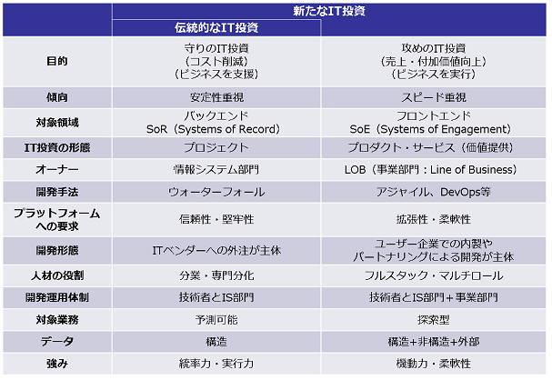
- 背景
- 第4次産業革命に向け、 クラウド、 データアナリティクス、 モバイル、 ソーシャルといったいわゆる第3のプラットフォームや、 IoT、 AI活用の本格化を背景にIT投資の在り方も変化が求められる。 IT投資は、 ビジネスのバックエンドを中心とした伝統的な領域から、 新たに、 売上や利益拡大に直結するフロントエンドの領域へと本格的に拡大。
- こうした変化に応じIT人材のスキルも強化・変革が求められる。 伝統的なIT投資と新たなIT投資では特徴が大きく異なる面がある。 特に伝統的なIT投資を主に担ってきた人材にとっては、 新たなIT投資に対応するスキルの強化・変革へ向けた“学び直し”が重要となり、 積極的な学び直しを通じ“安定性・信頼性を確保しつつ、 スピードや柔軟性を追求・実現する IT投資の最適解を担う人材”となることが期待される。
- AI導入
- AI導入の本質は、 ビジネスモデルの変革である
- ビッグデータを集めればAIを導入できるわけではない
- AIビジネスのみならず、 ITビジネスは労働集約型モデルではない
- 個人情報保護対応
- 一番良くないのは、 「一切のデータを見せないほうが安全だ」と思考停止してしまうことだ。 すべての情報を隠す方向で内向きになってしまうと、 ガラパゴス化し、 今後必ずインフラ化するAI時代に対応できなくなる
- 「GDPR用のEUデータベースとそうでないデータベースに分けたほうがよいだろう」
- AIは私たちの仕事を奪わない
- 人間＋ AI＝スーパーパワー
- 世界的にはむしろ、 AIの浸透によって人間がより人間らしい仕事に時間を割くことができると、 ポジティブに解釈されるケースが多いように感じる。
- 人間が行なうには苦痛すぎる仕事をマシンにさせ、 人間はよりクリエイティブな仕事につく
- AIが奪う量の仕事よりも、 AIが作り出す仕事のほうが多くなる
- 「自分の会社を見ていると、 3分の2の仕事は、 数年前にはなかった仕事だった」
- 「僕の仕事ーどうなりますか？」
- AIを教育するトレーナー、 AIモデルを企業内で横展開していくためには、 AI化される業務を実践してきた知見が最も重要
- AIトレーナーに必要な資質
- AIトレーナーに必要な資質は、 AIシステムのコンセプトを理解できていること。 これはインプットデータの良し悪しを仕分けできる能力が必要。
- 物事を俯敵してみるメタ認知の能力も必要
- そのAIに学習材料を与えて教育しているのは人間であるケースが多い
- （もちろん、 最近はAIがゼロベースで学習していく技術も増えているが、 ビジネスの現場に導入されているAIは教師あり学習も多いことを忘れてはならない）
- そして、 その学習の精度を上げていくのも、 やはり人間である。
- AI時代に増える仕事
- AI導入は省人化のためでばなく、 作業の均質化のため
- 今まで数人のエキスパートに頼っており、 スケールできなかった分野を、 いかにAIで拡張展開可能にするかという課題のほうが多い
- 全てがAI化されるわげでばない
- AI化によって生産性を上げていく
- AIの導入によって、 8時間の勤務時間のうち、 6時間が浮いたのであれば、 その時間をより重要な仕事に充てることができる。
- これからは、 一人あたりの生産性を上げていかないと、 国際競争の中で生き残れない。
- これからは、 AIに仕事が奪われる時代になるのではなく、 AIを使いこなしてより良い仕事をしてキャリアアップしていく人と、 そうでない人に分かれる時代になる。
- 浮いた時間で、 人はAIや機械が出来ないことをすればいい
- 匠の技
- 合理的でないこと、 無駄なこと、 非効率的なこと
- POINT
- AI導入によって、 AIトレーナーやロボット管理者という新しい人間の仕事が生まれてきている
- あらゆる仕事がAI化されるわけではない。 人間がやるべき仕事は山ほどある
- AIを使いこなすという発想が重要である
- サービス構築・運用に必要な人材
- 新たな社会を牽引する人材：
- 技術革新や価値創造の源となる飛躍知を発見・創造する人材
- 技術革新と社会課題をつなげ、 プラットフォームを創造する人材
- 様々な分野においてＡＩやデータの力を最大限活用し展開できる人材
 AI時代に生き残れる人、 生き残れない人
AI時代に生き残れる人、 生き残れない人- これから生き残る3つのタイプ
- 「特化型」
- 代替のきかない特化した高度でプロフェッショナルな技術を持っている人
- 「グレート・アダプター」と呼ばれる「適応者」
- これは高い技術力を持っていて、 市場で何が求められているかを考えながら、 自分をいろいろな場所に適応させることができる人
- 「シンセサイザー」と呼ばれる「合成役」
- これは、 異業種の人材をまとめて動かす、 コミュニケーション能力が高い人材を指す。
- A1で仕事が自動化すればするほど、 最後に残るニーズはAIで吐き出されたデータをどう価値に変えて、 どう事業に結びつけていくかを考えることだからだ。
- アメリカで「CBO」という役職が生まれた意味
- CBOとは、
- CBO(Chief Behavioral Officer=最高行動責任者）という役職
- 技術コミュニティとビジネスコミュニティの架け橋となり、 心理学や行動科学の知見を生かして会社のマーケティング戦略を考える役割の人を指す。
- イノベーションを起こすためには、 多くの場合ビジネスモデルの変革が求められる
- AI×行動経済学といった、 別領域の掛け合わせ
- AIバイリンガルを育てる
- 「今後、 AIやロボティックスを研究する生徒は、 歴史や哲学、 法律や経済学の知識が必要」
- AI時代にビジネスインパクトを出すためには、 なるべく離れた分野の知を組み合わせたほうがいい。
- 文系、 理系、 プラス体育会系など、 異なる見地から課題解決ができるAIバイリンガルを育てる教育が注目されている。
- リベラルアーツといわれる一般教養分野の学問を専攻する重要性も説かれている
- POINT
- これからの時代に生き残るのは「特化型」「適応者」「合成役」
- 異なる領域を掛け合わせる力が必要
- AIと人間の協働スキーム
- コンピュータが得意なこと、 人間が得意なこと
- 「人が得意とすることはコンピュータにとって非常に難しく、 コンピュータが得意なことは人にとって難しいことが多い。 仕事を奪い合う敵ではなく、 人とコンピュータがそれぞれの強みを生かすチームメートになれれば、 企業のパフォーマンスが最大化するだろう」
- これからの企業の優位性は、 AIと人間の協働化をいかにうまく進められるかにかかっている
- データサイエンティスト
- 「データサイエンス力、 データエンジニアリング力をベースにデータから価値を創出し、 ビジネス課題に答えを出すプロフェッショナル」
- AIにはできない仕事を担う「データ活用のプロフェッショナル」
- 機械学習を導人するためのデータ構造を設計し、 それを実装する
- どんなデータを集めるべきか、 どんなラベルづけをすべきか、 というところから、 データサイエンティストと話しながらデータ収集をしたほうが効率的。
- 課題は何か？データは揃っているか？
- 無限の切り口の中から、 課題解決に効く特徴量を見つけ出し、 どんなデータ活用の方法があるのかを見極めるのが、 データサイエンティストの腕の見せどころ。
- これからの時代は、 事務職の人であれ専門職の人であれ、 AIの活用は不可避になっていく
- データサイエンティストは、 機械学習を導人するためのデータ構造を設計し、 それを実装する
- 役割までを一貫して担うデータサイエンティストによっては、 プログラミングに特化していたり、 機械学習に特化していたりといった、 個別のビジネススキルを持つ人もいる。
- 残念ながら数日間のAI研修に派遣しただけで、 データアナリストが即戦力のデータサイエンティストに生まれ変わることは難しい。
- ポイント
- ビッグデータなどの膨大なデータを利用しやすい形に変換すること
- データを分析し、 意味を見出すこと
- ビジネス課題を理解し、 データ分析結果から事業戦略を導き出すこと
- データアナリスト
- すでに整っているデータを分析して改善点などを見つけるのが主な業務
- ビジネスデザイナー
- ビジネスデザインは、
- 人間中心のイノベーションアプローチである。 組織が新しい価値と新しい形の競争優位性を生み出すために、 ビジネス戦略と、 顧客への共感、 そしてユーザー体験のデザインを統合するアプローチを指す
- ビジネスの旗振り役
- 経営層とソフトウェアエンジニアやデータサイエンティストをつなぐ役割を担う。
- 企業課題を理解して関連性の高い情報（定性的、 定量的）を集めて解釈し、 イノベーションを作り出す職業だと定義されている。
- デザイン＝構想設計するという言葉どおり、 企業の成長戦略を選定し、 具体的な形に落とし込んで舵取りをする職
- データサイエンティスト10人に対して、 AIビジネスデザイナーを1人の割合くらいで育てないと、 実際に経営にインパクトを与えるAIビジネスが生まれないのではないか
- AIビジネスデザイナー
- 新技術をどうビジネスに生かすかを描き、 AIを活用したプロジェクトをマネジメントできる人材が求められる段階になってきている
- 既存の組織にはない役割
- ITとAIの技術を理解しながらビジネスをつないでいく人
- 自らアルゴリズムを切開、 開発する必要はない
- AIの話がわかって、 かつ経営課題をAIに落とし込めることがAIビジネスデザイナーの条件
- 顧客の課題を理解し、 エンドユーザーのニーズを理解し、 技術的な課題に落とし込み、 ビジネスモデルをデザインして検証する役目だと定義づけている。
- これからのAI時代に必ず求められる職種
- AIの概念がわかり、 かつ、 経営を学んでいる人などが適当。
- 抽象的な構想設計ができて、 かつユーザーストーリーの形に落とし込み物語が語れる人。 そしてそれを、 具体的なプロジェクトとして推進できる人。
- 異なるジャンルの概念を掛け合わせて発想することができる人。
- サービス構築・運用に必要な知識・スキルの学習
- 私たちはこれから何を学べばよいか
- 社会人になっても学び直しの時代に
- 「今後AIが社会に浸透していくと、 今ある仕事の50パーセントは、 2030年までに無くなる。 これからは、 社会人も新しいスキルセットを学べる場が必要だ」
- AI時代になったときに、 仕事を見つけることができるかどうかは、 今後自分にどれだけ「リスキル」の投資ができるかにかかっている
- 企業の再トレーニングも加速
- 短期間のビジネススキルセットのプログラム（ナノディグリーやマイクロカレッジと呼ばれたりもする）は、 今後どんどん増えるはず
- 日本は2018年リカレント教育元年
- リカレント教育とは、 基礎教育を終えて社会人になったあと、 あらためて就労に活かすため学び直したり就労するサイクルを繰り返すことを指す
- 日本のキャリアを自分でデザインする
- 会社がフォーカスしなければいけないのは、 意欲はあるが情報が足りない層、 英語で学ぶことに抵抗がある層
- これから新しくキャリアを作りたい人は、 何かをゼロから作ること、 何かを体験して、 アウトプットすることをおすすめしたい。
- これからは、 アウトプットがある人とない人の差が大きくなる。
- AIを作ったことがある人、 何かしらAIや機械学習に携わったことがある人、 AIでないにしても、 何かしら事業を作ったことがある人、 何か「モノ」を作ったことがある人などと、 全くそれらをしたことがない人では、 今後のキャリアに大きな差が出てくるはずである。
- POINT
- 社会人になっても学び直しが必要な時代に
- 今までの経験を生かしてAIビジネスにかかわることもできる
- 局所的ではなく、 全体を俯廠する視点を持ることで、 キャリアをデザインできる
- AI時代のスキル
- 必要な人材
- IT人材白書
- AI白書
- ITリテラシー
- iコンピテンシ・ディクショナリ(iCD)解説
- 【XMIND】Bib04-06iコンピテンシディクショナリ_04スキルディクショナリ (スキル424項目・知識8256項目から抜粋)（別ファイルで更新中）
- ITSS+（プラス）
- 背景
- 第4次産業革命に向け、 クラウド、 データアナリティクス、 モバイル、 ソーシャルといったいわゆる第3のプラットフォームや、 IoT、 AI活用の本格化を背景にIT投資の在り方も変化が求められる。 IT投資は、 ビジネスのバックエンドを中心とした伝統的な領域から、 新たに、 売上や利益拡大に直結するフロントエンドの領域へと本格的に拡大している。
- こうした変化に応じIT人材のスキルも強化・変革が求められる。 伝統的なIT投資と新たなIT投資では特徴が大きく異なる面がある。 特に伝統的なIT投資を主に担ってきた人材にとっては、 新たなIT投資に対応するスキルの強化・変革へ向けた“学び直し”が重要となり、 積極的な学び直しを通じ“安定性・信頼性を確保しつつ、 スピードや柔軟性を追求・実現する IT投資の最適解を担う人材”となることが期待される。
- 新たな領域の「学び直し」の指針
- ITSS+は、 第4次産業革命に向けて求められる新たな領域の“学び直し”の指針として策定(*1)している。 また、 従来のITスキル標準（ITSS）が対象としていた情報サービスの提供やユーザー企業の情報システム部門の従事者のスキル強化を図る取組みに活用されることを想定している。
- (*1) ITSS+は、 学び直しの指針に限定するため、 従来のITスキル標準に統合するものではない。 人材の評価・調達等での活用は想定せず、 それぞれの領域で固有の整理を行っている。
- アジャイル領域
- データサイエンス領域
- セキュリティ領域
- IoTソリューション領域
- 図書館分野
- Society5.0時代に普及が見込まれる次世代技術・サービス・手法
- 社会インフラ構築技術
- 地理空間情報（Ｇ空間情報）
- 地理空間上の特定の地点又は区域の位置を示す情報（位置情報）と、 これに関連付けられた様々な情報のこと。
- Lアラート（災害情報共有システム）
- 避難勧告・指示等といった、 安心・安全に関わる公的情報など、 住民が必要とする情報が迅速かつ正確に住民に伝えられることを目的とした情報基盤のこと。 全国の情報発信者（地方公共団体等）が発信した情報を、 地域を越えて全国の情報伝達者（メディア等）に一斉に配信できるので、 住民はテレビ、 ラジオ、 携帯電話、 ポータルサイト等の様々なメディアを通じて情報を入手することが可能となる。
- サービス・システム構築技術
- 標準的なシステム構築プロセス
- システム開発標準
- 共通フレームワーク
- 政府情報システム構築ガイドライン、 実務者手引書
- 開発手法
- 課題解決業務
- ウォータフォール型
- ユーザー企業の既存事業の効率化やコスト削減を目的としたIT活用／要件定義が明確、 確実性を重視、 主にウォーターフォール型で開発
- 価値創造型業務
- アジャイル型
- ユーザー企業の事業の価値創造を目的としたIT活用／要件が不確実、 スピード感を重視、 主にアジャイル型で開発
- ソフトウェア開発手法の1 つで、 開発対象を多数の小さな機能に分割し、 反復(イテレーション) と呼ばれる短い開発期間単位ごとに1 つの機能を開発・ソフトウェアリリースを行う手法である。 短いサイクルで一連のPDCA を回す開発手法であり、 日々生じる変化にすばやく適応することに主眼が置かれている。
- 創造的なシステムの開発手法
- PoC（Proof of Concept）
- 「概念実証」という意味。 新しい概念や理論、 原理、 アイディアの実証を目的とした、 試作開発の前段階における検証やデモンストレーションを指す。
- DevOpsによる迅速なソフト開発
- 開発チーム（Development）と運用チーム（Operations）が、 お互いに協調し合い、 また運用や本番移行を自動化する仕組みなどを積極的に取り入れ、 開発と運用が途切れることなく連続する仕組みを実現し、 ビジネスを止めずに、 継続的にデリバリーする取り組み
-
- デザイン思考
- OSS
- スパイラル
- スクラム開発
- WaaS(Workspace as a Service)
- ITとOTの融合
- DevSecOps：セキュアなソフトウェア開発ライフサイクル
- データ分析の業務の流れ
- 次世代情報システム構築フレームワーク
- サービスデザイン思考
- サービスを利用する際の利用者の一連の行動に着目し、 利用者がその手続を利用しようとした背景や、 手続を利用するに至るまでの過程、 利用後の行動までを一連の流れとして捉え、 利用者の心理や行動等を含めた体験（UX：ユーザーエクスペリエンス）全体を最良とすることを目標にしてサービス全体を設計する考え方のこと。
- クラウドサービス
- インターネット等のブロードバンド回線を経由して、 データセンタに蓄積されたコンピュータ資源を役務（サービス）として、 第三者（利用者）に対して遠隔地から提供すること。
- iPaaS（Integration Platform as a Service）
- WaaS（Workspace as a Service）
- クラウド・バイ・デフォルト
- システム導入に際し、 クラウドサービスの活用を前提とする考え方のこと。
- API
- Application Programming Interface の略。 複数のアプリケーション等を接続（連携）するために必要なプログラムを定めた規約のこと。
- コネクテッド・ワンストップ
- 民間サービスを含め、 複数の手続・サービスがどこからでも一か所で実現 することを原則とする考え方のこと。
- データ管理技術
- オープンデータ・バイ・デザイン
- 行政が保有するデータについて、 オープンデータを前提として情報システムや業務プロセス全体の企画、 整備及び運用を行うこと。
- ビッグデータ
- ボリュームが膨大でかつ構造が複雑であるが、 そのデータ間の関係性などを分析することで新たな価値を生み出す可能性のあるデータ群のこと。 例えば、 ソーシャルメディア内のテキストデータ・画像、 携帯電話・スマートフォンが発信する位置情報、 時々刻々と生成されるセンサデータなどがある。
- IoT
- Internet of Things（モノのインターネット）の略である。 自動車、 家電、 ロボット、 施設などあらゆるモノがインターネットにつながり、 情報のやり取りをすることで、 モノのデータ化やそれに基づく自動化等が進展し、 新たな付加価値を生み出すというコンセプトを表した語である。
- 課題解決型オープンデータ
- データの公開のみにとどまらず、 公開されたデータを積極的に利活用することによって様々な社会課題の解決を目指す、 オープンデータに係る取組のこと。
- 共通語彙基盤
- 氏名や住所等語彙の表記・意味・データ構造を共通化してデータの交換・活用を容易にする基盤のこと。
- 匿名加工情報
- 特定の個人を識別することができないように個人情報を加工して得られる個人に関する情報であって、 当該個人情報を復元することができないようにしたもののこと。
- 匿名加工情報は、 個人情報に関するルールは適用されず、 加工基準に従った加工その他の一定のルールのもと、 本人の同意を得ることなく自由に利活用することができる。 これにより、 新事業や新サービスの創出や、 国民生活の利便性の向上に寄与することが期待される。
- 情報銀行
- 情報利用信用銀行の略で、 個人とのデータ活用に関する契約等に基づき、 PDS等のシステムを活用して個人のデータを管理するとともに、 個人の指示又は予め指定した条件に基づき個人に代わり妥当性を判断の上、 データを第三者（他の事業者）に提供する事業のこと。 データの提供・活用に関する便益は、 データ受領事業者から直接的又は間接的に本人に還元される。
- マイナンバー（個人番号）
- 日本国内に住民票を有する全ての方が一人につき1 つ持つ12 桁の番号のこと。
- 外国籍でも住民票を有する方には住所地の市町村長から通知される。 マイナンバーは行政を効率化し、 国民の利便性を高め、 公平、 公正な社会を実現するための社会基盤。 その利用範囲は法令等で限定されており、 平成28 年1 月から順次、 社会保障、 税、 災害対策分野の行政手続で利用されている。
- P2P/ブロックチェーン技術
- 複数のデータを塊り（ブロック）にし、 暗号化してチェーンのように繋ぎ合わせて情報を管理する仕組みのこと。 複数の端末で運用するため、 耐障害性が高く、 またデータの改竄もほぼ不可能と言われている。
-
- PDS
- Personal Data Store の略で、 他者保有データの集約を含め、 個人が自らの意思で自らのデータを蓄積・管理するための仕組み（システム）のこと。 第三者への提供に係る制御機能（移管を含む）を有する。 運用形態としては、 個人が自ら保有する端末等でデータを蓄積・管理する（事業者は本人の同意によりデータを活用できる）分散型と、 事業者が提供するサーバ等でデータを蓄積・管理する（個人は当該事業者にデータの蓄積・管理を委託する）集中型がある。
- 実際にデータをやり取りする形態と、 データをやり取りせず必要な時にアクセス権（閲覧のみ可、 コピー不可など）を提供・管理する形態もある。
- 業務環境技術
- テレワーク
- テレワークとは、 ICT を活用し、 場所や時間を有効に活用できる柔軟な働き方のことであり、 雇用型と自営型に大別される。 雇用型テレワークとは、 ICT を活用して、 労働者が所属する事業場と異なる場所で、 所属事業場で行うことが可能な業務を行うこと（例：在宅勤務、 モバイルワーク、 サテライトオフィスでの勤務）を言い、 自営型テレワークとは、 ICT を活用して、 請負契約等に基づき、 遠隔で、 個人事業者・小規模事業者等が業務を行うこと（例：ＳＯＨＯ、 在宅ワーク、 クラウドソーシング）を言う。
- バックオフィス連携
- 地方公共団体を含む各行政機関が保有する情報を行政機関間でやり取りすること。 行政手続の際に必要な添付書類の省略を始めとした利便性の向上等が期待される。
- 利用環境技術
- ウェアラブル端末
- 腕や頭部などの身体に装着して利用する情報端末のこと。 デバイスに搭載されたセンサーを通じて装着している人の生体情報を取得・送信し、 クラウド上で解析しフィードバックすることで、 フィットネスやヘルスケア分野などでの活用が期待されている。 また、 スマートフォンと連携してのハンズフリーでのアプリ操作や、 産業分野での作業支援などにも使われ始めている。
- シェアリングエコノミー
- 個人等が保有する活用可能な資産等（スキルや時間等の無形のものを含む。 ）を、 インターネット上のマッチングプラットフォームを介して他の個人等も利用可能とする経済活性化活動のこと。
- 公的個人認証サービス
- 公的個人認証サービスとは、 オンラインで（＝インターネットを通じて）申請や届出といった行政手続などやインターネットサイトにログインを行う際に、 他人による「なりすまし」やデータの改ざんを防ぐために用いられる本人確認の手段。 「電子証明書」と呼ばれるデータを外部から読み取られるおそれのないマイナンバーカード等のIC カードに記録することで利用が可能となる。
- 電子証明書には、 以下の２種類がある。
- 署名用電子証明書・・・インターネット等で電子文書を作成・送信する際に利用（例 e-Tax 等の電子申請）。 「作成・送信した電子文書が、 利用者が作成した真性なものであり、 利用者が送信したものであること」を証明する。
- 利用者証明用電子証明書・・・インターネットサイトやコンビニ等のキオスク端末等にログインする際に利用（例 マイナポータルへのログイン、 コンビニでの公的な証明書の交付）。 「ログインした者が、 利用者本人であること」を証明。
-
- コネクテッドカー
- 情報端末としての機能を有する自動車のことであり、 車両の状態や周囲の道路状況などの様々なデータをセンサーにより取得し、 ネットワークを介して集積・分析することで、 新たな価値を生み出すことが期待されている。
- ITS
- Intelligent Transport Systems（高度道路交通システム）の略である。 道路交通の安全性、 輸送効率、 快適性の向上等を目的に、 最先端の情報通信技術等を用いて、 人と道路と車両とを一体のシステムとして構築する新しい道路交通システムの総称。
- 人材確保・人材育成
- IT/AI人材育成
- リカレント教育
- 近年の技術革新の著しい進展や産業構造の変化などに対応して学校教育の終了後、 技術系人材を含む職業人を中心とした社会人に対して行われる教育のこと。
- 通信、 映像技術
- MVNO
- Mobile Virtual Network Operator の略で仮想移動体通信事業者のこと。
- 4K
- 現行のハイビジョンを超える解像度の映像のこと。 水平方向の画素数が約4 千であることから、 4K と呼ばれる。 超高精細度テレビジョン放送に対応する規格として、 平成24 年にITU（国際電気通信連合）で勧告化されるなど、 国際標準化がなされている。 4K は現行ハイビジョンの4 倍の解像度となる。
- 5G
- 「超高速」だけでなく、 「多数接続」「超低遅延」といった特徴を持ち、 平成32 年の実現が期待されている次世代の移動通信システムのこと。 我が国においても産学官連携の推進団体である「第５ 世代モバイル推進フォーラム（5GMF）」の設立（平成26 年９月30 日）、 研究開発の推進、 国際連携の強化などの取組が進められている。 現行LTE と比べて100 倍の接続機器数（100 万台/km2）、 100 倍の通信速度（10Gbps）などが要求条件とされており、 ITU をはじめ、 世界各国でも実現に向けた取組が本格化している。
- 8K
- 現行のハイビジョンを超える解像度の映像のこと。 水平方向の画素数が約8 千であることから、 8K と呼ばれる。 超高精細度テレビジョン放送に対応する規格として、 平成24 年にITU（国際電気通信連合）で勧告化されるなど、 国際標準化がなされている。 8K は現行ハイビジョンの16 倍の解像度となる。
- VR（仮想現実）とAR（拡張現実）
-

- 【図解】コレ1枚で分かるVRとAR
- コンピューターと人間が視覚を介してつながる技術が登場しています。
- VR（Virtual Reality :仮想現実）
- Virtual Reality の略である。 コンピュータ上に仮想的な世界を作り出し、 あたかも現実にそこにいるかの様な体験をさせる技術。 __
- ゴーグルを被るとコンピューター・グラフィックスで描かれた世界が目の前に拡がります。 顔の動きや身体の動きに合わせて映像も動き、 ヘッドフォンを被れば音響効果もそれに加わり、 まるで自分がそこにいるかのような感覚を体験できます。 これがVRです。 コンピューターで作られた人工的な世界に自分自身が飛び込み、 まるでそれが現実であるかのように体験できる技術です。
- AR（Augmented Reality：拡張現実）
- Augmented Reality の略である。 現実の環境にコンピュータを用いて情報を付加することにより人工的な現実感を作り出す技術の総称。 情報を付加された環境そのものを示すこともある。
- ゴーグルやスマートフォン越しに見ている現実の建物や設備に、 それが何かを説明する「別の情報」が重なるように表示されます。 自分が見ている室内の光景や風景に、 実際にはそこにないモノや建物が表示され、 まるでそこに実物があるかのようです。 身体を動かしても位置が変わりません。 これがAR技術です。 現実に見ている視覚空間に情報を重ね合わせて表示させ、 現実世界を拡張する技術です。
- 世界最大級の投資銀行であるゴールドマン・サックスは、 世界のVR/AR市場は2025年までにおよそ800億ドル（約9兆円）に達すると予測しています。 これは、 現在のデスクトップPC市場にほぼ匹敵する規模です。 その市場は、 現在盛り上がりつつあるゲームやエンターテイメント分野だけではなく、 医療分野や産業分野、 小売市場など様々な業界で使われるようになるだろうと予測しています。
-
- Fintech
- 金融（Finance）と技術（Technology）を掛け合わせた造語であり、 主に、 ITを活用した革新的な金融サービス事業を指す。
- 1.3 今後5年の重要技術トレンド
- ①ユビキタスAI時代の到来
- ②音声インタフェースの普及
- 企業はVUIへの準備が必要
- YUI(Voice User Interface)
- ③ホワイトカラー業務の自動化の進展
- RPAからIPAへ
 図表1-3-4 RPAとコグニティブ技術、 BPMとの連携イメージ
図表1-3-4 RPAとコグニティブ技術、 BPMとの連携イメージ- RPA(ロボティック・プロセス・オートメーション)
- 人が端末で行うクリック、 コピー、 ペーストなどの定型作業をソフトウェアに設定
- 事務スタッフやホワイトカラーの作業を代替してくれる仕組み
- IPA(インテリジェント・プロセス・オートメーション)←RPA
- 画像認識や文字認識、 自然言語処理などのコグニティブ（認知）技術や、 BPM(ビジネス・プロセス・マネジメント)技術が取り込まれる
- 非定型業務、 より高度なビジネスプロセスの自動化も実現可能になる
- 業務の効率化、 コスト削減が期待できる
- チャットボット
- 日常会話をインターフェースとしたプログラム
- 今後は何らかの事務処理を代行する「処理代行チャットボット」が増加する
- チャットボットからRPAに指示を出して、 各種処理を自動化
- ④エッジコンピューティングの台頭
- コンピュータネットワーク内のユーザに近い場所（エッジ）で、 データの蓄積や演算処理といったコンピュータ処理を実行する
- 図表1-3-5 クラウドコンピューティングとエッジコンピューティングの違い
-
- エッジコンピューティングの活用シーン
- 図表1-3-6 エッジコンピューティングにおける機械学習アルゴリズムの利用イメージ
- ⑤データサイエンスの民主化
- プログラミング不要で使えるデータサイエンスツールの登場
- 数学・統計の専門知識や高度なプログラミングスキルがないビジネスユーザや業務コンサルタントが、 データサイエンス業務を可能にするツールが登場している⇒「データサイエンスの民主化」
- 図表1-3-8 データサイエンスツールのトレンドの変化
-
- DataRobot
- Alteryx
- Exploratory
- 人工知能（AI）
- Artificial Intelligence（人工知能）の略である。 コンピュータを使って、 学習・推論・判断など人間の知能のはたらきを人工的に実現するための技術。
- ディープラーニング
- ニューラルネットワーク（機械学習におけるアルゴリズムの1 つ）を用いた機械学習における技術の1 つである。 情報抽出を一層ずつ多階層にわたって行うことで、 高い抽象化を実現する。 従来の機械学習では、 学習対象となる変数（特徴量）を人が定義する必要があった。 ディープラーニングは、 予測したいものに適した特徴量そのものを大量のデータから自動的に学習することができる点に違いがある。
- 図表2-1-6 AI関連技術のロードマップ
- データサイエンティスト・プラットフォーム
- 一部のデータ分析業務を自動化し、 データサイエンティストの業務を効率化することができる「データサイエンティスト・プラットフォーム」に注目が集まり始めている
- 図表1 一般的なデータ分析の業務の流れ
- 人と機械とのコミュニケーション方法
- 2.2 AIアシストデバイス
- CUIからGUI
- GUIからNUIへ
- NUI（Natural User Interface）
- より直観的かつ事前な動作で操作
- タッチ操作、 ジェスチャー操作等
- VUI(Voice User Interface)
- ユーザの発話内容を理解し、 音声で操作
- BMI(Brain-machine Interface)
- ユーザの脳波を読み取り操作
- 図表2-2-1 ユーザインタフェースの移り変わり
- 2.3 エンタープライズ・チャットプラットフォーム
- 図表2-3-1 eメールとエンタープライズ・チャットプラットフォームの比較
- なぜ今、 エンタープライズ・チャットプラットフォームが注目されるのか
- 図表2-3-2 主な企業向けチャットサービスの変遷
- 図表2-3-3 第1期と第2期ブームの違い
- iPaaS（ Integration Platform as a Service）
- エンタープライズ・チャットプラットフォームを外部から支える重要な技術が「iPaaS」である。
- 図表2-3-10 iPaaSによる高度なサービス連携のイメージ
- 一般に、 IFTTT(if this then that)と呼ばれるレシピ（テンプレート）をカスタマイズすることでプロセスを定義できるようになっている
- IFTTT
- Microsoft Flow
- チャットボット
- 図表2-3-11 チャットボットによる業務システムのアバター化
- 人間拡張（Augmented Human）
- 図表1 人間拡張における4つの能力拡張と関連技術
- 3.2 ロボ・アドバイザー2.0
- 図表3-2-2 欧米ロボ・アドバイザーの機能の変遷
- ②ロードマップ
- 図表3-2-8 ロボ・アドバイザーのロードマップ
- 働き方改革とテクノロジー
- 日本における働き方改革は、 短期的には労働人口の減少に備えた無駄の節約や労働者の健康維持といった分野への取り組みが急務
- それだけでは十分でなく、 働き方改革のもう一つの側面である生産性の向上に注目
- 1．企業による働き方改革への取り組みの背景
- 2．効率化と従業員を守るためのIT
- 図表2 働き方改革のために提供されているITソリューション
- 3．生産性向上のための「デジタル・ワークプレイス」
- 効率の追求から生産性の向上へ
- デジタル化時代に即した職場環境＝デジタル・ワークプレイスの必要性
- デジタル・ワークプレイスとは、 デジタル化時代のデバイスやテクノロジーを駆使して、 働くプロセスや場所・コミュニケーション、 コラボレーションのあり方を新たに組み立てようとする考え方
- 図表4 デジタル・ワークプレイスの全体像
- 業務の最適化の視点：「業務の一貫した流れ」とは何か
- 業務の最適化を図り、 アプトプットの両・質の向上やビジネスを迅速に進めていくためには、 一般して業務をつなげていくという考え方でそれぞれの要素を連携させていく必要がある
- 図表5 API連携による仕事の一貫した流れの実現イメージ
- システムの最適化の視点：従業員エクスペリエンスを向上するシステムの連携
- 従業員にとって、 いつでもどこでも柔軟な働き方ができるインフラやアプリケーションが一貫して提供されることで、 仕事をする上での利便性やユーザビリティが向上する
- AIが人間をアシストする「インテリジェント・ワークプレイス」に向かう
- これまでの業務の流れとIT提供のあり方を見直すことで、 企業全体としてより高い生産性を目指す仕組みを工夫・構築するものである
- AIが従業員の能力を補い、 人間が気づかない部分をコンピュータがアシストすることが可能になりつつある
- 中長期的に本質的に生産性を上げていくために、 企業はデジタル・ワークプレイスの実現に向けた戦略を策定し、 業務の一貫した流れと従業員エクスペリエンスを向上させるシステムのあり方を検討していく必要が出てくる
- 図表6 働き方改革×テクノロジーのステップ
- サイバーセキュリティ
- サイバーフィジカルセキュリティフレームワーク(CPSF)
- 概要
- サイバー空間とフィジカル空間が融合することで新たな価値を生み出していく「Society5.0」における産業社会では、 一方で、 サイバー攻撃の起点が拡大するとともに、 サイバー攻撃による被害がフィジカル空間に及ぼす影響も増大し、 これまでとは異なる新たなリスクを伴うことになる。
- 本フレームワークは、 新たな産業社会におけるこうした環境において、 付加価値を創造する活動が直面する新たなリスクに対応していくための指針を示すものである。
-
- サブトピック 3戦略的なIT活用にはサイバーセキュリティ対策が必要
- ビジネスを発展させるために(攻めのIT投資とサイバーセキュリティ対策)

-
- 組織を発展させるために経営者、 管理者が認識し、 実践すべきことは？
- 柔軟にかつ大企業に先駆けて、 IT関連の次世代技術、 デジタル情報を活用していくことが、 中小企業の発展につながる。 デジタル情報、 IT技術の進展を受入れ、 それを活用して顧客サービスの強化を図る企業に、 大きなビジネスチャンスがある。
- ビジネスの拡大・発展のための「攻めのIT投資」は、 確立していない世界であり、 セキュリティリスクも高くなる。
- 次世代技術を活用したビジネス展開
- すでにデジタルトランスフォーメーション(デジタル変革)は始まっている
-
- 現状認識
- 今は、 IoT、 ビッグデータ、 ロボット、 AI等の技術革新による、 第4次産業革命の入り口にいる
- 【参照】IT人材白書2018
- あらゆるものがインターネットに接続するIoTの広がり、 あらゆる情報がビッグデータとして活用され、 AI技術により、 様々な分野で定型的な業務はもとより、 人海戦術では不可能だった業務まで、 AI技術を適用したサービス、 ロボットの適用が始まっている
- 既存のビジネスや業務に新技術を取り入れるだけでなく、 ビジネスモデルを変え、 経済活用のみならず、 個人の生活や社会構造まで影響が及ぶ
- デジタルフォーメーション（デジタル変革）とは、 あらゆる情報がデジタル化され、 IT技術によって、 社会や産業、 企業、 人のあり方や働き方が変わっていくこと
- 第4次産業革命が進むにつれて、 発展するビジネスと縮小するビジネスが明確になっていく
- 時代環境が大きく変わる時、 それにそぐわないビジネスは淘汰されていく
- 匠の技的な高度な伝統的技能を要する作業や、 旧来の延長線で仕組みの高度化、 洗練により、 生き残れるビジネスもあるが、 現状維持のビジネスの多くは、 相対的に意義を失う可能性が高い
- IoT、 ビッグデータ、 ロボット、 AI等の技術を、 クラウドコンピューティングやモバイル環境で活用できるようになったことは、 少ない投資で事業を立ち上げることが可能であり、 中小企業、 ベンチャー企業や個人の活躍のまたとないチャンスである
- 組織として
- 時代の潮流を捉えて、 組織が社会の変化の中で、 時代に適合して発展できる道を探り、 ビジョンをはっきり示すことが重要であり、 それは経営者の責務
- 「デジタルトランスフォーメーション」を実現するには、 ビジネスとデジタルのスキルを併せ持った人材の育成と獲得をしていく必要がある
- 個人として
- 自らも「デジタルトランスフォーメーション」の流れの中にあることの意識
- 求められるのは、 周囲を巻き込みながら改革を進める能力やビジネスとデジタルを結び付けて全体をデザインする能力を持った人材になること
- 目の前の業務だけにとらわれることなく、 広く視野を持って進むべき道を探り、 学ぶ。 勉強会やコミュニティなど、 学びの場は周囲にある。 自己研さんによって能力を高めれば高めただけ、 社会をリードしていく人材になっていく
-
- IoT、 ビッグデータ, AI、 ロボットの活用

- 解説
-
- 中小企業での活用事例「IoTユースケースマップ」
- http://usecase.jmfrri.jp/#/
- 深刻な人手不足に対応した、 省力化、 自動化のための投資
- 人が行ってきたことをセンサー化し、 センサーからの膨大な情報を機械的に分析することにより、 今までできなかった高度な分析と、 その結果を踏まえて業務やサービスを効率的、 効果的に行える
-
- IoTが果たす役割と効果

- 中小企業にとって、 経費削減と人材確保は大きな課題
-
- 各種センサーによる自動測定や電子タグ等（RFID）を 人やモノに貼り動きの情報を計測し収集することにより、 リアルタイムで状況が把握できる
- その際に、 センサーが誤動作したり、 誤った情報を発信すると、 正確な状況を把握できなくなり、 業務やサービスが混乱する
- IoT、 ビッグデータ、 AI、 ロボットは繋がっている
- ①センサー、 機器、 ロボットによりデータが取得され、 ②データのやり取りや通信により③集約されることによりビッグデータ化し、 ④人工知能等を用いて分析され⑤ロボット等を通じて 実環境でのアクションとして実行される
- IoT、 ビッグデータ、 AI、 ロボットを利用することにより、 人が行ってきたことが効率化されるとともに、 これらを使いこなすことにより、 人の仕事の質を高める能力が付加価値となる
- 人工知能（AI）が果たす役割と効果

-
- 人工知能は、 中小企業の既存の業務の人材不足の解消に留まらず、 既存の人材で新たな業務を行えるようになることが期待できる。
- 不足している労働力を補完する。 既存の労働力を省力化する。 既存の業務効率・生産性を高める。
既存の業務の提供する価値（品質や顧客満足度など）を高める。
これまでに存在しなかった新しい価値をもった業務を創出する。
既存の業務に取組む意欲や満足度を高める。
新しい業務に取組む意欲や満足度を高めること。
- 活用する際のサイバーセキュリティ上の留意点

-
- IoT装置は、 十分なセキュリティ対策がされていないものが多い。
特に以前のIoT製品に関しては管理者権限パスワードの変更手順や、 ファームウェアのアップデート機能はほとんど実装されていない。 - 利用者側として、 IoT製品は十分なセキュリティ対策がされていないことを前提とした対策が必要
- 製造者は、 IoT製品のファームウェアの自動アップデート機能を実装し、 脆弱性に対して速やかに対応する等の「IoT製品ガイドライン」に沿った対応が必要
- 膨大な情報をビッグデータとして活用に当たっては、 「改訂個人情報保護法」の個人情報に該当する可能性の「グレーゾーン」の情報も増える。
また、 利用の仕方によっては著作権侵害になるケースもある。 さらに、 情報をビッグデータとして公開する際に、 故意・過失に関わらず、 機密性の高い情報を公開してしまう可能性もある
- IoTを活用する一般利用者のためのルール

-
- 問合せ窓口やサポートがない機器やサービスの購入・利用を控える：
インターネットに接続する機器やサービスの問合せ窓口やサポートがない場合、 何か不都合が生じたとしても、 適切に対処すること等が困難になる。
問合せ窓口やサポートがない機器やサービスの購入・利用は行わないようにする。 - 初期設定に気をつける・機器を初めて使う際には、 IDやパスワードの設定を適切に行う。
パスワードの設定では、 「機器購入時のパスワードのままとしない」、 「他の人とパスワードを共有しない」、 「他のパスワードを使い回さない」等に気をつける。
・取扱説明書等の手順に従って、 自分でアップデートを実施してみる。 - 使用しなくなった機器については電源を切る： 使用しなくなった機器や不具合が生じた機器を インターネットに接続した状態のまま放置すると、 不正利用される恐れがあることから、 使用しなくなった機器は、 そのまま放置せずに電源を切る。
- 機器を手放す時はデータを消す： 情報が他の人に漏れることのないよう、 機器を捨てる、 売るなど機器を手放す時は、 事前に情報を削除する。
- サイバーセキュリティ×AI
-
- サイバーセキュリティ分野で機械学習が活用される背景
- 従来型サイバーセキュリティ対策の限界
- 機械学習への期待
- マルウェア検知への応用
- ネットワーク異常検知への応用
- ソースコードレビューへの応用
- セキュリティ監視の運用支援への応用
- 機械学習を活用する上で押さえるべきポイント
- 誤検知の可能性が避けられない
- 判定結果の分析が困難である
- 全てに万能な機械学習アルゴリズムは存在しない
- サイバーセキュリティ×AIのこれから
- インシデント検知：機械学習が活躍
- クリティカルな意思決定：セキュリティ専門家の重要性は変わらない
- 機械学習を適材適所で活用する
-
- 国の施策とドキュメント
- 全体関連図
- 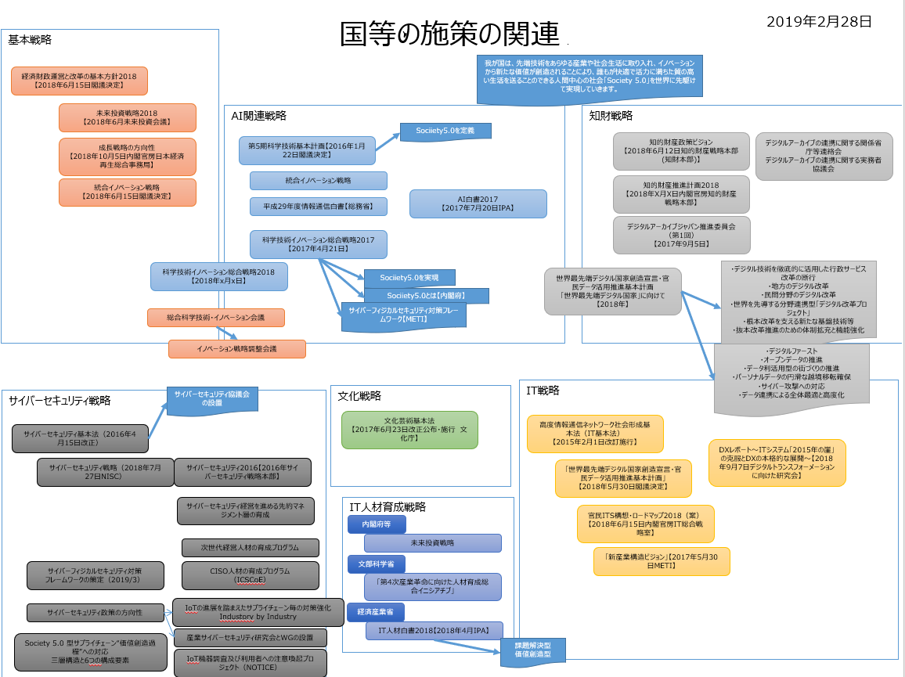
- 詳細
- 全体方針
-
- 2017
-
- 第２章 成長と分配の好循環の拡大と中長期の発展に向けた重点課題
- ２．成長戦略の加速等
- （１）Society5.0の実現を目指した取組
- ① 戦略分野
- ② 横割課題
- （５）新たな有望成長市場の創出・拡大
- ① 文化芸術立国
- 文化芸術立国に向けた新たな政策ニーズへの対応に必要な機能強化等を通じ、 コンテンツやデザイン等を含めた文化芸術資源を一層活用して地域や経済の活性化を図るため、 文化芸術活動に対する効果的な支援、 子供の体験機会の確保、 担い手の育成、 国立文化施設の機能強化、 文化プログラムやジャポニスム2018等の機会を捉えた魅力ある日本文化の発信、 文化財の保存・活用・継承、 メディア芸術等の振興を進める。
-
- 経済再生
-
- 「Society5.0」「データ駆動型社会」への変革
-
- 未来投資戦略2018概要
-
- 重点分野とフラッグシッププロジェクト
- 経済構造革新への基盤づくり
-
- 【参考】「未来投資戦略2017」【2017年5月30日未来投資会議】
- ニュース記事【2017年5月31日産経新聞】
-
- 人工知能（AI）などを中心とする「第４次産業革命」が普及した社会「Society5.0」の早期実現
- 重点分野として、 自動運転やドローンの技術を活用した「移動革命の実現」、 遠隔診療などを通じた「健康寿命の延伸」を挙げ、 生産性向上と成長加速を後押しする
- ＩＴ企業の海外展開支援
- フィンテック
- 金融とＩＴを融合した「フィンテック」では、 外部の事業者が銀行のシステムに接続できる「オープンＡＰＩ」について、 ３年以内に約８０行への導入を目指す。
- ５年以内をめどに、 インターネット上のクラウドサービスを活用して財務、 会計領域などの業務を効率化する中小企業の割合を４割程度まで高めたい
- 「隊列走行」来年から実験
- 移動革命
- 「移動革命の実現」では、 自動運転技術やドローンを活用したサービスの実用化を掲げた。 過疎地域での移動手段や人手不足といった成長の足かせとなる社会的課題の解決に加え、 国際的に激しさを増す自動運転の開発競争で、 日本が優位に立つ狙いもある。
- AI使い治療情報集約
- 医療介護
- IT力強化へ集中プラン
- 人材投資
- どの分野にどんな人材が求められるかといった「ＩＴ人材需給」を把握する仕組みを、 経済産業省や厚生労働省、 文部科学省などが連携して早期に構築するとした。 働き手のＩＴ関連技術力を分野別に向上させる
- 情報サービスを提供するのに必要な実務能力を明確化、 体系化した新たな指標を平成２９年度中に策定する
- 実践的なＩＴ能力の習得に向け、 企業が実際に直面している課題などを用いる「課題解決型教育」を促進するため、 官民の共同組織を２９年度中をめどに設立
- 意欲を持つ社会人がＩＴスキルを新たに身に付けられるよう、 大学などでの「学び直し」を支援
- 新たな数値目標として、 平成４２年までに大学や専門学校などの社会人受講者数を２７年時点（４９万人）の２倍となる１００万人まで増やす
-
- 概要図
-
- Ⅰ．Society 5.0に向けた戦略分野
- Ⅱ．Society 5.0に向けた横割課題
-
- データ連携・利活⽤を促進する制度・ルール【2017年5月METI】
-
- Society 5.0につながるConnected Industries
- データの利用権限に関する契約ガイドライン作成の背景
- データの利用権限に関する契約ガイドラインver1.0の概要
- 【参考】データの利⽤権限の取決めの参考事例
- 不正競争防⽌法における対応の⽅向性（不正な⾏為のイメージ）
-
-
- 第４次産業革命の推進に当たっては、 総合科学技術・イノベーション会議におけるSociety 5.0の基本方針の検討と連携しつつ進める。
-
-
-
- ③データ利活用の推進
- 高度情報通信ネットワーク社会推進戦略本部の下に、 データ流通環境整備検討会を設置し、 本人の関与の下でのデータ流通・利活⽤を可能とする仕組みについて検討中
- ④－２ 行政データの徹底開放
-
-
- これまでの成果と今後の取組
-
- サイバーセキュリティーの確保、 IT利活用の徹底
- • サイバーセキュリティーの確保、 マイナンバーの利活用の拡大、 個人情報の適正な取り扱いの確保とデータ利活⽤推進のための体制整備、 政府・自治体のIT化・オープンデータの推進等。
- 統合イノベーション戦略【2018年6月15日閣議決定】
-
-
- • サイバーセキュリティーの確保、 マイナンバーの利活用の拡大、 個人情報の適正な取り扱いの確保とデータ利活⽤推進のための体制整備、 政府・自治体のIT化・オープンデータの推進等。
-
-
- 文化芸術関連
- 文化庁文化審議会
-
-
- 「文化芸術振興基本法」の改正要望【文化芸術振興議員連盟】
-
- 対象期間を、 2020年度までのおおむね６年間（平成27年度～平成32年度）
-
- 我が国が目指す「文化芸術立国」の姿
- 第３ 文化芸術振興に関する基本的施策
- （２）美術館，博物館，図書館等の充実
- 図書館が，資料や情報等の継続的な収集，調査研究への支援や資料の利用相談，時事情報の提供等の機能を充実させることにより，地域を支える情報拠点となるよう，先進事例の収集・情報提供や図書館の充実方策を提示するなどの支援を行う。
- 地域や住民にとって役に立つ，魅力ある図書館づくりの核となる司書等の資質向上を図るため，研修等の充実を図る。
- 各地域に所在する貴重な文化芸術資源の計画的・戦略的な保存・活用を図るため，博物館・図書館・公文書館（ＭＬＡ）等の連携の促進に努める。
- 人口過少地域における博物館や図書館等の活動の活性化を図るため，情報通信技術の活用により，遠隔地間の連携による研修や遠隔講座等の実証研究を行う。
- （２）地方公共団体及び民間の団体等への情報提供等
- 国内外の文化芸術に関する各種の情報や資料の収集・保存（アーカイブの構築）及び活用方法について検討を行い，国立国会図書館をはじめとする関係機関と連携し，国と民間，国と地方公共団体との役割分担を図りつつ，国民に提供する。
- 重点戦略４：国内外の文化的多様性や相互理解の促進
- 貴重な各種文化芸術資源を継承し，次代の文化芸術創造の基盤となる知的インフラを構築するため，映画，舞台芸術，アニメ，マンガ，ゲーム，デザイン，写真，建築，文化財等の文化資産及びこれらの関連資料等の収集・保存及びデジタルアーカイブ化等を，国立国会図書館等の関係機関と連携しつつ促進する。
-
-
- 報告書
- ポイント
- 複数の権利制限規定の組合せによる「多層的」な対応

- ［第１層］著作物の本来的利用には該当せず，権利者の利益を通常害さないと評価できる行為類型
- ①著作物の表現の知覚を伴わない利用行為（例：情報通信設備のバックエンドで行われる著作物の蓄積等）
- ②著作物の表現の知覚を伴うが，利用目的・態様に照らして当該著作物の表現の享受に向けられたものと評価できない行為（例：技術開発の試験の用に供するための著作物の利用等）
- 解釈
- 著作権者の許諾なしに書籍を全文電子テキスト化することを認める
- ［第２層］著作物の本来的利用には該当せず，権利者に及び得る不利益が軽微な行為類型
- インターネット検索サービスの提供に伴い必要な限度で著作物の一部分を表示する場合
- 所在検索や情報分析の結果提供の際に表示する目的でその準備のために行われる複製行為
- 解釈
- 人工知能（AI)を活用した多様な検索、 情報分析に活用することを認める
- スニペット表示を認める
- ［第３層］公益的政策実現のために著作物の利用の促進が期待される行為類型
- 著作物の本来的利用を伴う場合も含むが，文化の発展等の公益的政策目的の実現のため権利者の利益との調整が求められる行為類
- 引用，教育，障害者，報道等の様々な場面に係る権利制限規定がこれに該当
-
- 科学技術
-
- 「科学技術基本計画」は、 科学技術基本法に基づき政府が策定する、 10年先を⾒見通した５年間の科学技術の振興に関する総合的な計画
-
- 概要
- 「科学技術基本計画」は、 科学技術基本法に基づき政府が策定する、 10年先を⾒見通した５年間の科学技術の振興に関する総合的な計画
- 第５期基本計画（平成28年度〜32年度）は、 総合科学技術・イノベーション会議（ＣＳＴＩ）として初めての計画であり、 「科学技術イノベーション政策」を協力に推進
- 本基本計画を、 政府、 学界、 産業界、 国民といった幅広い関係者が共に実施する計画として位置付け、 我が国を「世界で最もイノベーションに適した国」へと導く
-
-
-
- 統合イノベーション戦略（素案）（概要図）
- － 主要目標と主要施策ー
-
- 科学技術イノベーション総合戦略2017（案）【2017年4月21日】
- ５か年にわたる第５期科学技術基本計画（2016～2020年度）の下、 科学技術イノベーション総合戦略を毎年度閣議決定し、 来年度に向けて重きを置くべき取組を示す。 我が国を「世界で最もイノベーションに適した国」に変革すべく、 以下の取組を推進。
- Society 5.0とは

- 第５期科学技術基本計画で提示された未来社会の姿。 狩猟社会、 農耕社会、 工業社会、 情報社会に続く、 以下のような新たな経済社会をいう。
- ①サイバー空間とフィジカル空間を高度に融合させることにより、
- ②地域、 年齢、 性別、 言語等による格差なく、 多様なニーズ、 潜在的なニーズにきめ細かに対応したモノやサービスを提供することで経済的発展と社会的課題の解決を両立し、
- ③人々が快適で活力に満ちた質の高い生活を送ることのできる、 人間中心の社会。
-
- 第１章重点事項
- 世界に先駆けてSociety 5.0を実現するために特に重要な事項。 以下に加え、 卓越した研究拠点や多様な学術研究を生み出す研究環境を確保することも重要。
- （１）Society 5.0の実現
- ・政府、 産業界、 学術界が一体となり国民参加の下で推進→若手研究者やベンチャー企業などのチャレンジを誘発
- ・関係省庁等の取組を基礎研究から実用化まで一気通貫で実施→SIP（戦略的イノベーション創造プログラム）に関係省庁等の取組の方向性を合わせ推進
- ・Society 5.0のコンセプトを世界に共有すべく発信
- （２）「科学技術イノベーション官民投資拡大イニシアティブ」の着実な実行
- 第２章未来の産業創造と社会変革に向けた新たな価値創出の取組

- （２）新たな経済社会としての「Society 5.0」を実現する
- 第３章経済・社会的課題への対応
- 第４章科学技術イノベーションの基盤的な力の強化
-
- （１）人材力の強化
- （３）資金改革の強化
- （２）知の基盤の強化
- ①イノベーションの源泉としての学術研究と戦略的・要請的な基礎研究の推進
- ・大学等が改革を断行し、 民間とパートナーシップを築き、 基礎研究に民間の投資を呼び込む取組の加速
- ②研究開発活動を支える共通基盤技術、 施設・設備、 情報基盤の戦略的強化
- ・ビックデータに対応した情報基盤等の強化
- ③オープンサイエンスの推進
- ・国際的なルールメイキングへの対応と公的資金の研究成果のオープン化（データプラットフォームの整備等）
-
- 第５章イノベーション創出に向けた人材、 知、 資金の好循環システムの構築
- （１）オープンイノベーションを推進する仕組みの強化
- ・「組織」対「組織」の大型の産学官共同研究を推進
- ・部局横断的に研究者を組織、 研究開発を集中管理する組織の設置支援
- ・技術シーズとニーズの実効あるマッチングの推進
-
- （２）新規事業に挑戦する中小・ベンチャー企業の創出強化
- （３）イノベーション創出に向けた知的財産・標準化戦略及び制度の見直しと整備
- ・ビックデータ、 ＡＩ等に国際的視座から対応した知財システムの構築
- ・標準化人材の育成や戦略的な標準化活動など国際標準化の変化への対応
-
- （４）「地方創生」に資するイノベーションシステムの構築
- （５）グローバルなニーズを先取りしたイノベーション創出機会の開拓
-
- 第６章科学技術イノベーションの推進機能の強化
- 平成29年度情報通信白書【総務省】
- 平成28年度情報通信白書【総務省】
-
- 特集「IoT・ビッグデータ・AI ～ネットワークとデータが創造する新たな価値」
- 特集部詳細
-
-
- 報告書2017－AIネットワーク化に関する記憶最適な議論の推進に向けて－【2017年7月28日総務省AIネットワーク社会推進会議】
- 人工知能技術戦略（人工知能技術戦略会議とりまとめ）【2017年3月31日人工知能技術戦略会議】
-
- １．人工知能技術、 データ、 コンピューティングを取り巻く状況
- ２．政府における人工知能技術開発に係る推進体制
- ３．人工知能とその他関連技術の融合による産業化のロードマップ
- ４．３センターを中心とした人工知能技術の研究開発及び社会実装に係る取組
- ５．人工知能技術戦略のフォローアップ
- 別紙１
- 別紙２
- 別紙３
- 別紙４
- 別紙５
-
- 知的財産
-
- ～「価値デザイン社会」を目指して」を目指して
- 2025～30 年頃を念頭に、 どのような社会になりたいか、 という目的を考え、 「価値デザイン社会」になろう、 というターゲットを掲げた。
-
- エグゼクティブサマリー
- （１章）
- AI やブロックチェーンなどの技術の活用、 モノ消費からコト消費、 シェアリングエコノミー、 米国の GAFA や中国の BAT などの企業の台頭など、 時代の変化のスピードは目を見張るものがある。
- こうした変化の中には、 今後も続く可能性がある予兆が多く含まれている
- （２章）
- 2025 年から 30 年という将来を考えたとき、 それを正確に予測することなど不可能だが、 どんな社会にしたいのかを考えることはできる。
- 人や産業や社会の仕組みをどのようなものにしていきたいのか。 未来の社会において中核となる価値は何か。 専門調査会の委員と事務局の間でタブーなく議論を戦わせた。 もちろん、 予兆がそのまま続くわけでもないし、 揺り戻しのようなものも意識してみた。
- （３章）
- しかし、 これだけでは世界どこでも同じになってしまう。 日本の未来を考えれば、 海外が一目を置く日本の特徴（独り勝ちを望まないバランス感覚、 自然との共生、 思想的柔軟性、 新しいものを受け入れて研ぎ澄ます編集力など）を活かすことが不可欠だ。
- 一方で均質性など過去には優位性をもたらした特徴が弱点にならないようにする、 さらには、 他国に先立って日本が直面する状況（最も先を行く少子高齢化）をチャンスにするとの視点も必要だ。
- これがうまくできれば、 日本が生む様々な価値、 日本ならではの様々な価値が世界で共感され、 リスペクトされる可能性が広がる
- （５章）
- そのためのポイントになるのは、 新しい価値を次々に構想し、 発信し、 これが価値だと定義してしまうくらい世界にも認められるようになることだ。 そんな「価値デザイン社会」を日本は目指したい。 プラットフォームに人を集め、 データを収集し価値を創出するとともにマーケティングに活用していくグーグル、 使われてない資源をマッチングさせてユーザーの利便性を向上させたウーバー、 そんな新しい価値のデザインを日本から次々と生み出し「その手があったか」「一本取られた」と世界中の人に感じさせたい。 もちろん、 簡単なことではない。 今までの均質ではなく脱平均の発想で臨む、 やってなんぼの精神で試行錯誤する、 サプライ側から一方的に供給することよりも消費者側のリアルタイムな評価に軸足を置く、 など変えなければいけないことは多い。 最初から完璧に機能する社会変革はない。 様々なステークホルダーが協力し、 試行錯誤しながら改善していくのがオープンイノベーションの特徴でもある。 そんな「価値デザイン社会」に共感して世界中から異能が集まり何度でもチャレンジする、 様々な力が出合い、 融合して価値をデザインしていく場がたくさんある、 そして世界をうならせる価値をデザインして発信して、 世界で共感され、 リスペクトされていく。 それを実現するために、 鍵になる広義の知的財産に関連するようないくつかの新しい仕組みの例も提案した。 このビジョンが将来の知財システムを考える戦略の出発点になることを期待する
- 本文
- はじめに ～新しい時代の新しい知財戦略～
- 図１ 知的財産戦略ビジョン策定のアプローチ
-
- 第１．将来の社会変化につながると考えられる現在の環境変化や兆候
- 図２ 「未来」の兆し
- ２．新技術の進展と浸透
- 表１ 新技術の概要と応用例
- 「IoT」
- 「ビッグデータ」
- 「人工知能（AI）」
- 「ブロックチェーン技術」
- 「3D プリンタとファブレス生産」
- 「仮想現実（VR）／拡張現実（AR）」
- 「量子コンピューティング」
- 「5G」
- 「ゲノム編集技術」
- （新技術及びその組合せによるイノベーションの加速）
- これらの新技術とその周辺技術はそれぞれ新しい製品やサービスを生み出している。 しかし、 より重要なのは、 これら新技術が社会全体に浸透することにより、 分野を超えて組み合わされて活用されつつある点である。
- 例えば、 「IoT」や「ビッグデータ」「人工知能」によるデータ分析を従来産業と組み合わせることにより、 新しいビジネスを生み出すといったことが、 ものづくりの生産現場や医療・ヘルスケア産業、 農業などあらゆる分野で加速度的に進みつつある。 さらに、 グローバル企業においては、 ユーザーが生み出す膨大なデータを解析して新しい価値を予想し提供していくことが大きなビジネスチャンスになりつつある。 また、 人工知能（AI）、 仮想現実（VR）/拡張現実（AR）技術やブロックチェーン技術の実用化はまだ端緒についたばかりであり、 社会の様々な場面でさらに新技術が融合し、 需要者のニーズデータと結びついて浸透すれば、 あらゆる産業が大きく変容していくことが見込まれる。
- （サイバー空間の増大とリアル空間との融合）
- 新たな技術をあらゆる産業や社会生活に取り入れてイノベーションを創出し、 一人一人のニーズに合わせる形で社会的課題を解決する新たな社会として 2016 年に提唱された「Society 5.0」への取組が、 産業界も含め様々な分野において加速している。
- ここでは、 「サイバー」の占める割合が増大するとともに、 さらに「リアル」と「サイバー」の結びつきが強化され、 それを通じてデータを媒介にした異業種同士や供給者と顧客の直接の結びつきが加速される。
- （個人がクリエイターやサプライヤーへ）
- このようなサイバー空間の発展や自動翻訳の発展に伴い、 コンテンツやデータに関する距離、 時間、 費用、 言語の制約が減少し、 これまで以上に共有しやすくなる。 そのため、 ものづくりやコンテンツ作成・発信が誰にとっても容易になり、 加えて、 それに対する対価徴収や利益配分の仕組みも技術的に整備されることで、 ビジネス化までも容易になる。
- このような状況においては、 従来はアイデアがあってもなかなか実現できなかったことが、 今後はアイデアの発案から実現までを個人でもできることになり、 その意味で発案から実現までの距離や時間が短くなるととともに、 従来のユーザーも容易にクリエイターやサプライヤーになることができるようになる。
- （ブロックチェーン技術の普及－データの信頼性確保へ）
- サイバーの世界でブロックチェーン技術を活用した「仮想通貨」の広がりが注目を集めている。 従来各国が発行する法定通貨が経済活動の基軸であったが、 政府外主体が発行し世界中で瞬時に送金が可能な仮想通貨の広がりにより、 消費者の決済やビジネス（特にベンチャー企業）の資金調達、 あるいは価値貯蔵の方法が変わる兆しが出てきている。 ブロックチェーン技術は「仮想通貨」で注目を浴びているが、 その分散台帳技術は、 データが氾濫する中、 データの透明性と信頼性を確保する技術として、 金融分野だけではなく、 コンテンツ分野を始め広い範囲で応用が模索され始めている。
- こうした新技術の進展においては、 特に計算能力（コンピューティングパワー）が重要になるが、 計算能力は電気料金の影響が大きいため、 電気料金の国際的に特に低い一定国に集中するようになってきており、 今後さらにその傾向が強まるとの指摘もある。 同様に、 データも重要であるが、 個人情報や医療情報をはじめとする情報の取扱いに関する制度・規制が国ごとに異なっているため、 データが入手容易な国においてそれを活用した人工知能等の分野のビジネスが急成長しているとの指摘もある。
- （プロダクトライフサイクルの短期化とデザイン思考の重要性の拡大）
- 全体的に供給が需要を上回る状況では、 常に最新のものを使えるとの意識を需要側が持つようになり、 技術進歩及び技術の浸透・伝播のスピードが速くなっていることもあいまって、 プロダクトサイクルも短期化している。 技術の国際的普及も早くなっており、 技術のみによる差別化はますます困難となっている。 このため、 技術や市場を起点にするのではなく、 ユーザー起点、 すなわち成果物がユーザーに使われる具体的な場面から発想して、 ユーザー自身も気付いていない潜在的なニーズを捉え、 新しい商品やサービスを考えていくデザイン思考がますます重要となる。
- ３．国際関係における環境変化
- 第２．現在の兆候から予測される将来の社会像～人が幸せになる未来を作ろう～
- 図３ 将来の社会像
- １．主に人の将来像（生き方、 働き方、 価値観）
- ２．主に産業の将来像（イノベーション、 競争力）
- ３．主に社会の将来像（仕組み・ルール、 国際関係）
- （知的資産における所有からシェアへ － 知的資産の高付加価値化へ）
- このような将来において、 知的資産について俯瞰すると、 社会の価値観が「所有」から「シェア」へと変化したり、 オープンイノベーションにより組織の内外で協働して価値を創造したりするようになるのと同様、 知的資産においても、 オープンソースソフトウェア等におけるコピーレフト21の考え方や、 クリエイティブ・コモンズ22など著作者が主体的に多くの人がより利活用しやすいルールを設定できるツールなどが普及する可能性がある。
- このような仕組みを通じて、 例えば、 作者は著作権を保持したまま作品を自由に流通させることができ、 受け手はライセンス条件の範囲内で再配布やリミックスなどをすることができる、 という工夫が可能になり、 知的資産の共有・共働の仕組みが拡大すると考えられる。
- 製品は時間とともに物理的に劣化することは避けられず、 一般的には価値が減っていくが、 サービスは使えば使うほどデータが増えて、 それを人工知能で分析することで、 さらに高度なサービスを提供できるので価値が上がっていく。
- 知的資産の価値を最大化することを考えると、 このような違いや変化を踏まえ、 データや知財のマネジメントや仕組みを変えていくことが重要である。
- ４．「未来」の相反性（人々が幸せを感じる未来になっているか？）
- 第３．将来における「価値」とそれを生む仕組み
- １．望ましい将来において重要となる「価値」
- （１）個人の多面性と多様性を活かす
- （２）リアル（実物、 体験、 本物、 歴史、 文化など）の価値が高まる
- （３）「新しい」を創る（イノベーション）・創発が不可欠に
- （４）社会が多様な価値を許容することが基盤
- ２．我が国の新しいビジネスや国際競争力向上につながる「価値」の創出の仕組み
- （１）多様な個性を生みだす仕組み
- （２）多様な個人が活躍する環境整備
- （３）知識のプラットフォーム化
- （４）多様な価値を包摂する社会システム
- （５）将来の価値創造エコシステムの一例
- 第４．日本の特徴を活用して価値をデザインし、 世界へ発信する
- 第５．将来の「仕組み」に向けて今後の検討が必要な課題
- １．「価値デザイン社会」への挑戦
- 図7 知的財産戦略ビジョンの実現のための全体的な枠組の例
- 知的資産に関する仕組みを内包する社会の姿
- ２．具体的なシステムの例
- （１）脱平均で価値を生みだすチャレンジをする人材・組織の育成・集積と彼らが力を発揮してイノベーションを生みやすい場の提供
- ① 新たな価値創造を行える人材の育成【短・中期】
- ② 価値創造メカニズムの見える化とそれを活かした組織経営【短・中期】
- ③ 多様な価値を見える化、 評価するシステムや指標づくり【中・長期】
- ④ 多様な価値を満たす事業にチャレンジするベンチャーを後押しする仕組み【短・中期】
- （２）技術・データ・コンテンツ等知的資産（人を含む）の柔軟な交流や共有を促し、 価値を拡大する仕組みの構築
- ① 多様な人材・組織が集う場の形成【短・中期】
- ② SDGs 等実現のための知的資産プラットフォーム【短・中期】
- 図９ ナレッジプラットフォーム for SDGs（SDGs 等実現のための知的資産プラットフォームの一例）
- 膨大な文化的・技術的集積を有するとともに、 「企業は社会の公器」に代表されるように企業は社会とともに発展するという考え方を実践し世界の共通語となってきた SDGs と親和性の高い我が国の特色を生かし、 SDGs の達成や中小企業支援による地域活性化といった社会的課題の解決に資する多様な知的資産を、 サプライ・サイド及びディマンド・サイドの双方から結集した知的資産のプラットフォームを構築する。 そこでは、 プラットフォームに参加する企業が、 一定の知的財産をコモンズとして活用することにより、 新たなアイデアやビジネスを組成する34。
- ③ 次世代のコンテンツ創造・活用システムの構築【中・長期】
- 図１０ 次世代のコンテンツ創造・活用システムの構築（ブロックチェーン（分散台帳技術）、 ＡＩ等新技術の活用）
- 我が国の文化の一側面とも言える価値ある正規のコンテンツが素早く、 幅広く配信され、 適正な対価が関係者に還元されるよう、 ブロックチェーン技術等の活用によって権利管理や利益配分の自動化・簡略化を進め、 制作・活用の両方の局面におけるコラボレーションの活性化、 新たな資金調達手法の構築、 さらには二次利用市場の拡大等を円滑化しつつ、 海賊版を根絶するような仕組みを構築する。 あわせて、 AI の利用による生産性の向上、 新たな創作表現の実現、 マーケティングや翻訳等ローカライズの円滑化などを促す。 一方で、 新たな才能を生み出す場でもあるユーザー・ジェネレイテッド・コンテンツ（UGC）については健全性を担保するためのアーキテクチャーの導入や紛争処理の仕組みを検討する。
- （３）世界に共有される価値や感性の持続的な生産・発信・展開
- ① クールジャパンの魅力分析・効果的発信【短・中期】
- ② クールジャパンを支える外国人の集積・活用【短・中・長期】
- ③ デジタルアーカイブの構築【短・中期】
- 企業、 大学、 行政機関や、 美術館・博物館や図書館など、 様々な主体が 保有する多様な分野の知的資産をデジタルアーカイブとして可能な限り利用しやすい形にし、 時間や空間の制約を超え、 日本の価値観や歴史、 文化を継承・共有・再発見する目を養うとともに、 新たなコンテンツクリエーションの源泉として利活用していく。
- 分野横断的な統合ポータルを入口としたデジタルアーカイブジャパンの構築・活用と国際連携に取り組む。
- ブロックチェーン技術等の活用による知的資産の権利管理・利益配分システムの構築を促進する。
- （４）その他の今後検討すべき課題
- 社会の様々な部分でのトライアル（キャリア、 ビジネス）を可能にする制度の整備（複業推進、 サンドボックス制度40、 テストエリア41、 時限付規制緩和等）
- 政策の企画立案における人工知能（AI）活用
- おわりに
-
- 知財ビジョンは、 2025～30 年頃を念頭に、 どのような社会になりたいか、 という目的を考え、 「価値デザイン社会」になろう
- 「知財立国」では知財というツールを使って日本を強くすることを目指 し、 進めてきた。 一方、 知財ビジョンは、 2025～30 年頃を念頭に、 どのような社会になりたいか、 という目的を考え、 「価値デザイン社会」になろ う、 というターゲットを掲げた。 ツールとしての知財ではなく、 目的を明確にした上で、 それに資する知財を考えるという、 これまでとは違うレイヤーの議論を中心に据えた。 このビジョンをいかに広げ、 実践していくかがこれからの勝負である。
- どのようにすれば「多様な価値観に基づき幸せを感じることができる人がより多くなる未来」を作ることができるか
- このビジョンには、 どのようにすれば「多様な価値観に基づき幸せを感じることができる人がより多くなる未来」を作ることができるかという思いの下、 多様な有識者が集う「場」をこしらえ、 ワークショップ形式で自由闊達に意見を出し合った。 まさに「オープンイノベーション」の実践の成果として生まれたこのビジョンは、 そこへ向けて関係者が一丸となって突き進んでいきたくなるような、 目的地を示すものである。
- 「未来」＝「夢」×「技術」×「デザイン」という式
- その中では、 「未来」＝「夢」×「技術」×「デザイン」という式を示 し、 我が国が目指す方向性として、 新しい価値を次々と構想し、 発信し、 世の中に共感され、 リスペクトされていく「価値デザイン社会」を提示した。 そこでは、 脱平均の個人や企業が分散型で価値を生み出す。 「やってなん ぼ」の精神で次々と着手・挑戦し、 だんだん良くなるアジャイル型で発展していく。 そんな考えに多くの読者が共感し、 ともに歩んでいただけることを願っている。
- 一方で、 このビジョンは、 これからの歩みを進めるための出発点に過ぎず、 次の一歩が重要である。
- 第一は、 より多くの人に考えを共有してもらいつつ、 フィードバックを得ることである。 そのために、 専門調査会の委員や事務局、 政府の関連部局などが、 わかりやすい形で、 自らが得意な方法で、 自らが訴求しやすい相手に発信していく。
- 第二は、 考えを共有する人たちが、 思いをもって、 価値のデザインに次々と着手して、 トライ＆エラーで行動して、 発信していくことである。
- 第三は、 新しい挑戦を阻むような仕組みや規制を撤廃し、 挑戦に誘導していくような仕組みを政府などが作ることである。 その重要な一つのピースが知財関連システムであり、 どのようなシステムが必要なのか、 関係者が英知を結集して深堀していく。
- そして第四は、 この検討を通じての大きな気づきの一つであるが、 このような形での未来についての自由で幅広い議論の場があり、 真剣な本音の議論が行われ続けることである。 そのため、 専門調査会では、 引き続きこのビジョンの有効性を検証しつつ、 修正や新たな提案を行っていく。
- これらによって、 我が国が「価値デザイン社会」として世界からリスペクトされ、 あこがれられる国になることを願い、 結びとする。
-
-
- １．新たな知財戦略ビジョン策定の背景
- ２．「知的財産戦略ビジョン」の構成
-
- （１）現在の兆候から予測される将来の社会像
- （２）将来における「価値」とそれを生む仕組み
- 専門調査会における委員意見：キーワードと今後の方向性
- （３）目指すべき「ビジョン」と今後の検討方向性
- ビジョン実現のためのシステム例①ナレッジプラットフォームfor SDGs
- ビジョン実現のためのシステム例②次世代のコンテンツ創造・活用システムの構築
-
- ビジョン実現のためのシステム例③クールジャパンの再生産
-
- 「知財計画2016」内のアーカイブ関連記述目次
- 第３．コンテンツの新規展開の推進
- ２．アーカイブの利活用の促進
- （１）現状と課題
- 国立国会図書館、 関係府省の連携の枠組みの下でのアーカイブ間の連携促進、 各分野のアーカイブ構築の促進、 アーカイブ利活用のための基盤整備の推進 等
- デジタルアーカイブ構築に関して
- 複数の連携モデルからの選択又はそれらの組み合わせにより、 分野と地方の両方から連携に必要な検討を進める
- 分野や地方に応じて、 国立国会図書館サーチとの直接的な連携、 分野を束ねるアグリゲーターとの連携、 地域を束ねるアグリゲーターとの連携、 といった複数の連携モデルからの選択又はそれらの組み合わせ
- アーカイブ利活用促進に関して
- メタデータを自由に二次利用可能な条件で公開するオープン化が世界的な方向であり、 公的機関を対象にメタデータのオープン化に必要な対応について検討する
- サムネイル／プレビューについても、 権利者の利益に配慮しつつ、 コンテンツの解説や紹介等のための一般的な利用を容易に行うことができるよう、 運用面、 制度面での整備
- 公的機関のものや公的助成を受けて作成されたデジタルコンテンツについては、 より自由な利用条件で公開されることが望ましく、 これを推進する方向で検討を進める
- 目的に応じたポータルの効果的な構築、 メタデータの複合的利用による新しい付加価値サービスの提供等、 集約・共有されたメタデータの利活用事例について共有し、 分かりやすく発信していく
- （２）今後取り組むべき施策
- ＜＜アーカイブ間の連携の促進＞＞
- （関係省庁等連絡会及び実務者協議会の開催）
- （短期）（内閣府、 国立国会図書館、 文部科学省、 総務省、 経済産業省）
- （統合ポータルの構築）
- 国立国会図書館サーチと、 文化財分野における文化遺産オンラインを始めとする各分野のアグリゲーターが運用している主要アーカイブとの間でメタデータレベルでのアーカイブ連携
- アグリゲーターの先行事例となる特定の分野又は地方におけるポータルサイトの整備のための取組を進める。
- （短期・中期）（国立国会図書館、 文部科学省、 総務省）
- （利活用の推進のための連携）
- 集約・共有されたコンテンツ及びメタデータの利活用事例や連携の効果を示す事例の収集及び共有化を図るとともに、 利活用推進のための具体的課題、 対応策を検討し、 必要な措置を講ずる。
- （短期）（国立国会図書館、 内閣府、 関係府省）
- （地方におけるアーカイブ連携の促進）
- 自治体が保有する情報を蓄積する公共クラウドやふるさとデジタル図書館等の取組を通じ、 地方ゆかりの文化情報等のコンテンツの収集や利活用を促進する。 （短期・中期）（総務省）
- 地方における各機関の協力や連携の在り方を検討する。
- （短期・中期）（国立国会図書館、 内閣府、 関係府省）
- ＜＜分野ごとの取組の促進＞＞
- （分野ごとのアグリゲーターによる取組）
- 収集対象の選定やメタデータ形式の標準化等のアーカイブ構築の方針の策定等、 分野内のアーカイブ機関における収蔵資料のデジタル化への協力、 メタデータの集約化を行う。
- （短期・中期）（国立国会図書館、 文部科学省、 総務省）
- （書籍等分野）
- コンテンツの拡充に向けて、 公共・大学図書館等の所蔵資料のデジタル化を促進するため、 アーカイブ構築の手順等についての研修等を行う。
- （短期）（国立国会図書館、 文部科学省）
- 統合ポータルとの連携強化のため、 公共・大学図書館等に対し、 デジタル化した資料へメタデータ付与や外部連携インターフェース（ＡＰＩ）を付した形での公開を支援するための助言等を行うとともに、 所蔵資料のデジタル化及びアーカイブ連携のための取組を促進するため、 必要な情報の周知を図る。
- （短期）（国立国会図書館、 文部科学省）
- 国立国会図書館所蔵資料のデジタル化に引き続き取り組むとともに、 デジタル化データの利活用の促進に向けた取組を強化する。
- （短期）（国立国会図書館）
- （文化財分野）
- 2020 年東京オリンピック・パラリンピック競技大会に向けて、 文化財情報を海外に発信するため、 地域の文化資源に関するデータの集約、 画像掲載率の向上、 多言語化を含め利活用に資する取組を推進する。
- （短期）（文部科学省）
- 全国の博物館・美術館等において文化財等のデジタルアーカイブ化とそのデータの利活用が促進されるよう、 地方の博物館・美術館等に対して必要な情報の周知を図る。 また、 各館における紙媒体の収蔵品目録のデータベース化等、 デジタルアーカイブ化と利活用促進のための具体策を検討し、 その推進を図る。
- （短期）（文部科学省）
- （メディア芸術等分野）
- メディア芸術データベースの利用実態調査結果を含め、 改善点等を検討するとともに、 外部との連携を可能とするためのシステム改修等、 更なる内容の充実化とその利活用促進を図る。
- （短期）（文部科学省）
- ・東京国立近代美術館フィルムセンターにおいて、 映画フィルムの収集や保存のためのデジタル化を引き続き実施する。
- （短期）（文部科学省）
- ・民間主体でのアーカイブ構築を促進するため、 デザイン等のモデル分野における中核拠点の形成を支援する。
- （短期）（文部科学省）
- （放送コンテンツ分野）
- ＜＜アーカイブ利活用に向けた基盤整備＞＞
- （メタデータオープン化の課題と対応策の検討）
- 実務者協議会等において、 統合ポータルとの連携によって集約されるメタデータのオープン化の促進に向けた課題の整理と対応策の検討、 サムネイル／プレビューの取扱いの検討、 デジタルコンテンツの拡充とその利用条件の表示促進の検討を行い、 メタデータ及びコンテンツの流通促進を図る。
- （短期・中期）（国立国会図書館、 内閣府、 関係府省）
- （集約されたメタデータの利活用の促進）
- 統合ポータルからデータセットを抽出する機能の普及等の環境整備を進めるとともに、 統合ポータルで集約され提供されるメタデータを活用した目的別ポータルの構築や利活用事例の共有に向けた取組を行う。
- （短期・中期）（国立国会図書館、 内閣府、 関係府省）
- （アーカイブの構築と利活用の促進のための著作権制度の整備）
- 美術館等が所蔵する著作物に関し、 解説・紹介のために当該著作物のデジタルデータの利用を可能とすることについて具体的な制度の検討を行い、 必要な措置を講ずる。
- （短期・中期）（文部科学省）
- 権利者不明著作物等の利用を円滑化するため、 著作権者不明等の場合の裁定制度における補償金供託について、 一定の場合に後払いを可能とすること等の見直しについて内容を検討し、 次期通常国会への法案提出を視野に、 必要な措置を講ずる。
- また、 利用者による権利者探索コスト低減のための民間団体の取組に対する支援の在り方について2016年度中に検討を行い、 必要な措置を講ずる。
- （短期・中期）（文部科学省）
- （利活用の促進のための周辺環境の整備）
- 権利処理手続を円滑化し、 コンテンツの活用を促進するため、 コンテンツ等の権利情報を集約化したデータベースの整備を官民が連携して分野ごとに進めていく。
- （短期・中期）（文部科学省、 経済産業省）【再掲】
- デジタルコンテンツの利活用を促進するため、 実務者協議会等と連携しつつ、 国際標準化機関（ISO)における技術委員会TC46 の国内委員会におけるデジタルコンテンツの二次利用を促進するための権利表示の国際標準化に対する取組等を推進する。
- （短期・中期）（経済産業省）
- （アーカイブ関連人材の育成）
- これまでのアーカイブの構築を通じて得られたノウハウや成果を活用しつつ、 アーカイブの構築をけん引する人材や利活用をサポートする人材の育成を支援するため、 美術館・博物館、 大学・研究機関、 民間施設の関係者に対し、 アーカイブの必要性やアーカイブ人材の重要性の認識を広めるためのシンポジウム、 研修開催等の取組を実施する。
- （短期・中期）（国立国会図書館、 文部科学省、 総務省）
- デジタルアーカイブに関連する大学における司書や学芸員の養成課程等において、 省令改正により、 2012 年度からデジタルアーカイブ関係の内容を含む科目が新設されたことを踏まえ、 デジタルアーカイブに関する専門的知識を有する人材の育成がより充実されるよう促していく。
- （短期・中期）（文部科学省）
-
- （検討会報告書概要）
- １．（１）第四次産業革命と知財システムを取り巻く環境
-
- これまで
- 「モノ」に関する技術が競争力の源泉
- 「知財」として独占することと市場を広げる「標準」化を組み合わせたオープン＆クローズ戦略を推進
- 現在
- IoT、 AI及びビックデータに代表される技術革新が進展
- 「データ」及びその「分析技術」、 それらを活かした「ビジネスモデル」が新たな競争力の源泉に
- 様々なつながりにより新たな付加価値が創出される産業社会“Connected Industries” が到来
- オープン・イノベーションを通じて利益の獲得やビジネスを拡大することが求められている
- これから
- オープン＆クローズ戦略の対象の拡大・深化が必要
- 「知財」及び「標準」に「データ」を加えた三次元的な複合戦略が必要
-
- １．（２）第四次産業革命と知財システムを取り巻く環境
- 知財、 データ、 標準の三次元的な複合戦略及び検討対象項目

- ２．データの利活用
- データ利活用に関しては、 一定の法的基盤が整備されつつある
- 一方で、 データを不正な利用から保護する仕組みが十分でない
- データの利活用やアクセスに関する権限は法的な位置付けが明確でなく契約に委ねられている
- 不正競争防止法等におけるデータの保護
- 不正競争防止法の改正を視野に入れ検討する
- （検討例）
- データの不正取得の禁止
- データに施される暗号化技術等の保護強化
- 営業秘密としているデータ分析方法等に係る民事訴訟の負担軽減（政令）
- （産業構造審議会「営業秘密の保護・活用に関する小委員会」において検討中、 今春を目途に方向性のとりまとめ。 ）
- 情報のデジタル化を踏まえ、 営業秘密管理指針・秘密情報の保護ハンドブックの記載を充実させる
- 利用権限に関する契約
- データの利用権限に関するガイドライン等の策定を行うための検討を行う
- （検討内容）
- 企業間におけるデータの利活用や契約の実態に即した、 保護の在り方や契約等のルールについて
- ３．（１）産業財産権システム～「データ」・「サービス」等への対応～
- 今後のイノベーションにより、 新たなデータ構造の創出が想定される
- IoTが普及する中、 サービスとモノが結びついたビジネス関連発明の特許出願が増加している
- これら新たな競争力の源泉は、 どのような要件を備えれば権利化できるのか、 分かりづらい
- AI、 ３Dプリンティング、 ネットワーク化等に関する技術の進展により、 新たな課題も生じている
- データ構造の取扱いの明確化
- 特許の対象となるデータ構造の事例を公表（平成29年3月）
- 今後とも、 予見性を高める取組を継続
- IoTを活用したビジネスモデルを支える知財
- 特許を着実に取得し活用するための環境を整備（平成29年度中）
- （具体例）
- ソフトウェア関連発明の審査基準の点検
- ビジネス関連特許の活用方法の整理
- 新設した特許分類の活用
- 分野横断的な審査体制の整備
- 新技術への対応
- 国境をまたいだ侵害行為に対する権利保護（裁判例の蓄積等を注視しつつ、 引き続き検討）
- 将来的なAIによる発明等の産業財産権上の取扱い（現時点では、 現行法で保護。 今後の動向を注視）
- 3Dプリンティング用データの産業財産権上の取扱い（現時点では、 現行法で保護。 今後の動向を注視）
-
- ３．（２）産業財産権システム～特許紛争の解決～
- ４．国際標準化を推進するための体制・人材育成
- ５．個別産業分野及び中小・ベンチャー企業等の視点からの検討
-
- （検討項目詳細等）
- ＩｏＴ俯瞰図（データ、 産業財産権、 標準の絡み合い）
- 不正競争防止法等におけるデータ保護の在り方
- 利用権限に関する契約の在り方
- 産業財産権の対象としてのデータの取扱いの明確化
- IoTを活用したビジネスモデルを支える知財システムの在り方
- どのようなビジネス関連発明が特許されるのか、 取得した特許をどう活用すればいいのか分かりづらい。
- IoT化はあらゆる技術分野に及ぶため、 先行技術調査や審査の困難性が増している。

- ソフトウェア関連発明に係る審査基準の点検を行う。 （平成29年度中）
- IoTを活用したビジネス関連発明の特許の活用方法の整理を行う。 （平成29年度中）
- IoT関連技術用に新設した特許分類を特許文献に対して着実に付与する。
- 分野横断的なIoT関連発明に対応するため審査体制を整備する。 （平成29年度中）
- 国境をまたいだ侵害行為に対する権利保護の明確化
- 将来的なAIによる発明等の産業財産権上の取扱いの明確化
- 3Dプリンティング用データの産業財産権上の取扱いの明確化
- 標準必須特許を始めとする多様な特許紛争の迅速・簡便な解決①
- 標準必須特許を始めとする多様な特許紛争の迅速・簡便な解決②
- 新市場創造型標準化制度や国立研究開発法人を活用した業種横断プロジェクトの推進
- 国際標準化を推進するための体制・人材育成の在り方
- 中小・ベンチャー企業等における今後の対応
-
- 構成
-
- イノベーション創出
- 地方創生
- 文化創造
- III-1 コンテンツの海外展開促進と産業基盤の強化
- III-2 映画産業の振興
- III-3 デジタルアーカイブの構築
- ・国として分野横断統合ポータルを構築し、 産学官連携の下、 研究・ビジネス・インバウンド等に活用
- III 2020年とその先の日本を輝かせるコンテンツ力の強化
-
- 本文
- はじめに
- I．第４次産業革命（Society5.0）の基盤となる知財システムの構築
- １．データ・人工知能（AI）の利活用促進による産業競争力強化に向けた知財制度の構築
- ２．知財システム基盤の整備
- ３．グローバル市場をリードする知財・標準化戦略の一体的推進
- II．知財の潜在力を活用した地方創生とイノベーション推進
- １．攻めの農林水産業・食料産業等を支える知財活用・強化
- ２．地方・中小企業による知財活用と産学・産産連携の推進
- ３．「国民一人ひとりが知財人材」を目指した知財教育・知財人材育成の推進
- Ⅲ．2020 年とその先の日本を輝かせるコンテンツ力の強化
- １．コンテンツの海外展開促進と産業基盤の強化
- ２．映画産業の振興
- ３．デジタルアーカイブの構築
- （１）現状と課題
- （２）今後取り組むべき施策
- 我が国における分野横断型統合ポータル構築に向けたアーカイブ間の連携と利活用を促進するため、 関係府省において以下の取組を推進することとする。
- ①アーカイブ間連携と利活用の促進
- （産学官でのデジタルアーカイブのフォーラムの開催）
- （デジタルアーカイブ推進のための工程表の作成）
- （国の統合ポータルの構築）
- （国の各アーカイブ機関におけるガイドラインの順守）
- （利活用の推進のための連携）
- （地方におけるアーカイブ連携の促進）
- ②分野ごとの取組の促進
- （分野ごとのつなぎ役による取組と支援）
- （分野横断の取組）
- （書籍等分野）
- （文化財分野）
- （メディア芸術等分野）
- （放送コンテンツ分野）
- ③アーカイブ利活用に向けた基盤整備
- （オープン化の促進）
- （アーカイブの構築と利活用の促進のための著作権制度の整備）
- （利活用の促進のための周辺環境の整備）
- （アーカイブ関連人材の育成）
- デジタルアーカイブジャパン推進委員会（第1回）（2017年9月5日）
- IT関連
-
-
- II. 「国から地方へ、 地方から全国へ」（IT 利活用の更なる推進のための３つの重点項目）
- ２．[重点項目２] 安全・安心なデータ流通と利活用のための環境の整備
- (１) 利用者志向のデータ流通基盤の構築
- (２) データ流通の円滑化と利活用の促進
- (３) 課題解決のためのオープンデータの「実現」（オープンデータ2.0）
-
- ○電子行政オープンデータ戦略の概要（抜粋）61
- Ⅰ．基本的方向性
- ＜基本原則＞
- － 政府自ら積極的に公共データを公開すること
- － 機械判読可能な形式で公開すること
- － 営利目的、 非営利目的を問わず活用を促進すること
- － 取組可能な公共データから速やかに公開等の具体的な取組に着手し、 成果を確実に蓄積していくこと
- Ⅱ．具体的な施策
- １．公共データ活用の推進
- ①公共データ活用ニーズの把握
- ②データ提供方法等に係る課題の整理、 検討
- ③民間サービスの開発
- ２．公共データ活用のための環境整備
- ①公共データ活用のために必要なルール等の整備
- 各府省におけるデータ公開時の著作権の取扱い、 利用条件、 機械からのアクセスルール、 利用者と提供者の責任分担の在り方、 機微情報の取扱いの在り方等について、 利用者の利便性と権利者の権利の保護に十分配意しつつ、 公共データ活用のために必要なルール等を整備する。
- ②データカタログの整備
- ③データ形式・構造等の標準化の推進等
- ④提供機関支援等についての検討
-
- 官民データ活用推進基本法（平成28年法律第103号）
-
- 概念
- オープンデータ基本指針（案）の概要
- 本基本指針の位置づけ
- 平成28年12月14日に公布・施行された「官民データ活用推進基本法」において、 国、 地方公共団体、 事業者が保有する官民データの容易な利用等について規定された。 本文書は、 これまでの取り組みを踏まえ、 オープンデータ・バイ・デザイン（注）の考えに基づき、 国、 地方公共団体、 事業者が公共データの公開及び活用に取り組む上での基本方針をまとめたものである。
-
- １．オープンデータの意義
- （１）国民参加・官民協働の推進を通じた諸課題の解決、 経済活性化
- （２）行政の高度化・効率化
- （３）透明性・信頼の向上
- ２．オープンデータの定義
- ① 営利目的、 非営利目的を問わず二次利用可能なルールが適用されたもの
- ② 機械判読に適したもの
- ③ 無償で利用できるもの
- ３．オープンデータに関する基本的ルール
- （１）公開するデータの範囲
- ・・・各府省庁が保有するデータは、 原則オープンデータとして公開。 公開することが適当でない公共データは、 公開できない理由を原則開示するとともに、 限定的な関係者間での共有を図る「限定公開」といった手法も積極的に活用。
- （２）公開データの二次利用に関するルール
- ・・・ 原則、 政府標準利用規約を適用。
- （３）公開環境
- ・・・特にニーズが高いと想定されるデータは、 一括ダウンロードを可能とする仕組みの導入や、 APIを通じた提供を推進。
- （４）公開データの形式等
- ・・・機械判読に適した構造及びデータ形式で掲載することを原則。 法人情報を含むデータは、 法人番号を併記。
- （５）公開済みデータの更新
- ・・・可能な限り迅速に公開するとともに適時適切な更新。
- ４．オープンデータの公開・活用を促す仕組み
- （１）オープンデータ・バイ・デザインの推進
- ・・・行政手続き及び情報システムの企画・設計段階から必要な措置
- （２）利用者ニーズの反映
- ・・・各府省庁の保有データとその公開状況を整理したリストを公開→利用者ニーズを把握の上、 ニーズに即した形での公開
- ６．地方公共団体、 独法、 事業者における取組
- 地方公共団体
- 独立行政法人
- 公益事業分野の事業者
- オープンデータ・バイ・デザインの推進（案）
- １．オープンデータ・バイ・デザインの定義
- 「行政が保有するデータについては、 オープンデータを前提として情報システムや業務プロセス全体の企画、 整備及び運用を行う」
- ２．オープンデータ・バイ・デザインの具体的な内容
- 行政が保有するデータを原則としてオープンデータ化するとともに、 利用者が活用しやすい形で公開するため、 行政手続及び情報システムの企画・設計段階から必要な措置を講じる。
-
- （１）一括ダウンロードやAPIを通じたデータ提供
- （２）メタデータの公開
- （３）機械判読に適したファイル形式およびデータ構造
- （４）データ構造やデータ形式の標準化
- （５）公開済みデータの更新
- また、 データベース構築にあたっては、 オープンデータを前提とする（非公開とすることに合理的な理由がないものについては、 予算計上を認めないこととする）。
-
- 地方公共団体の取り組み促進（案）
- 地方公共団体におけるオープンデータへの取組を加速する改良版パッケージの提供。

- ■期待される効果
- ・防災関連や少子高齢化など地域課題に関係するデータの公開による、 地域課題解決の一助
- ・公開と活用両方の自治体展開パッケージの提供による、 地方公共団体の取組を容易化
- ・標準化の推進（登録データのフォーマット標準例の提供等）
- パッケージはオープンソースとしてGitHubで公開することにより、 他の地方公共団体に展開可能とする (※) 。
- ※パッケージ一式導入用：
- ※ダッシュボードのみ導入用：
- 世界最先端ＩＴ国家創造宣言・官民データ活用推進基本計画【2017年5月30日付け閣議決定】
-
-
- 第１部 総論 . 3
- Ⅰ IT 戦略の新たなフェーズに向けて（「データ」がヒトを豊かにする社会の実現） 3
- Ⅱ 「官民データ利活用社会」のモデルの構築に向けて 8
- Ⅲ 推進体制 .15
- Ⅳ 地方公共団体との連携・協力 .18
- Ⅴ 事業者等との連携・協力 .18
- 第２部 官民データ活用推進基本計画 . 20
- Ⅰ 官民データ活用推進基本計画に基づく推進の施策 .20
- Ⅱ 施策集 37
-
- 「世界最先端デジタル国家創造宣言・官民データ活用推進基本計画」【2018年5月30日閣議決定】
-
-
-
-
-
- 政府情報システム
-
- 世界最先端IT国家創造宣言(2013年6月14日閣議決定。 2014年6月24日変更)に基づき、 政府におけるITガバナンス強化のため、 情報システム調達やプロジェクト管理に関する共通ルールとして策定
- 人材育成・人材確保
- セキュリティ
-
- Society5.0における新たなサプライチェーン（バリュークリエーションプロセス）の信頼性の確保に向けて
- 人材育成
-
-
- 課題解決型
- 価値創造型
-

- デジタル大変革時代、 本番へ
- 時代環境が大きく変わる時、 それにそぐわないビジネスは淘汰されていく
- デジタル変革とも呼ぶべき第4次産業革命の入り口にいる
- デジタル時代にふさわしい新たなビジネスを生み出して行く必要がある
- 旧来の仕組みの高度化、 洗練は否定されるべきではないが
- “デジタルトランスフォーメーション”が重要
- 仕事の進め方や社会のあり方をゼロベースで刷新し、 時代に適合するように自らを変える
- それに歩みを進めるかどうか、 つまり企業の方向性を決めるのは、 言うまでもなく経営者
- 経営者の役割： 時代の潮流を捉え、 自社が変化の中で発展できる道を探り、 ビジョンをはっきりと示す
- 同時に従来から続く組織構造の破壊や再構築も必要
- 求められるのは、 周囲を巻き込みながら改革を進める能力やビジネスとデジタルを結び付けて全体をデザインする能力を持った新しい時代のリーダー
- ITエンジニアがリーダーへと成長するには挑戦する意欲を持つ
- さまざまな経験を積み、 多様な人と関わる環境が必要
- 企業が行わなければならないのは、 誰もが挑戦できる環境、 開かれた場を作ること
- 個々のIT人材は、 自らも“デジタルトランスフォーメーション”の流れの中にあることを意識
- その中で活躍できる人材となれるように、 自らの能力を高めていくことが重要である
- そのためには情報への感度を高め、 自ら挑戦する場を求める姿勢が重要になる。 普段の仕事に専念しているだけでは不十分と考えなければならない。
-
- 企業に向けたメッセージ
- IT人材個人に向けたメッセージ
- デジタル時代は、 個々のIT人材にとって活躍の場を広げられるまたとないチャンスである。
- 所属する企業で新たな試みをすることもできるし、 起業のチャンスも開けている。
- クラウドコンピューティングやモバイルの進展で、 個人や少数のチームでできることが飛躍的に拡大している
- このことを認識し、 目の前の業務だけにとらわれることなく、 広く視野を持って進むべき道を探り、 学ぼう。 勉強会やコミュニティなど、 学びの場は周囲にある。 自己研鑽によって能力を高めれば高めただけ、 社会をリードする人材になっていく。
- 1．デジタルトランスフォーメーション時代のIT人材
- “デジタルトランスフォーメーション”とは何か
- ITの進展やインフラの整備によって、 ビジネスや社会のあり方が変わり始めている。
- あらゆるものがインターネットに接続するIoTの拡がりや、 ビッグデータ活用、 人工知能（AI）の様々な分野への適応が始まっている。
- デジタル化を進めるということは、 様々な要素（アナログデータも含む）をデジタル化、 数値化して扱うことを意味する。
- 共通に扱えるデータへと変換することによって、 処理や分析が可能になり、 フィードバックまで含めた一連の流れを作ることが可能になる。
- デジタル化の本質は、 以上のようなデータ駆動型へのビジネスや社会の変革にある。
- 既存のビジネスや業務に新技術を取り入れるだけでなく、 ビジネスモデルを変え、 経済活動のみならず、 個人の生活や社会構造にまで影響が及ぶ。
- その変化は、 “デジタルトランスフォーメーション”や“デジタル革命”と呼ばれている。

- デジタル化によって起こる変化の一例として、 紙の書籍から電子書籍へのデジタル化を図式化したものである。
- すでに始まっている“デジタルトランスフォーメーション”
- 外部ITサービス利用状況、 現在の事業【変化に対する認識別】
- “デジタルトランスフォーメーション”が進む企業では、 経営者による主導の重要性を認識
- “デジタルトランスフォーメーション”の鍵を握るリーダー的人材
- 方針やビジョンの明確化」、 「専門組織・部署の設置」、 「Fail fastなどの風土改革」を重要視
- 経営者とリーダーが周囲を巻き込み、 改革を進める
- デジタル化の推進をリードする人材に必要な能力と環境
- デジタル化に携わる人材
- 必要な能力
- もともと製品の社内開発・運用を行ってきた企業の場合、
- 社内に既存の技術力はあり、 加えて具体的な技術（データ解析やAI、 クラウド等）が求められている。
- また、 具体的な要素技術だけでなく、 システムの構造設計を行い開発する能力（システムアーキテクト）の重要についても挙げられていた。
- 一方、 これまでITが深くかかわっていなかった事業がデジタル化した場合、
- 今までIT部門が行っていた外部企業への開発委託を事業部門が直接行うことになり、 ITを事業に適用する能力や、 機能設計や要件定義を行う能力が求められる。
- 人材の獲得方法と育成
- 事業のデジタル化に必要なIT能力を、 既存の人材でまかなうのは難しいとの意見があった。
- デジタル化した事業を行っている企業では、 ネット系の企業等でデジタルビジネスの経験がある者を中途採用し、 事業の推進を行っている例が見られる。
- また、 新しい技術（データ活用やAI、 IoTなど）を持った人材に関しては、 中途採用の難しさを挙げる企業が多く、 新卒採用した人材を育成して人材確保する傾向が見られ、 新卒を採用する際に理数系人材を重視する企業もいくつかあった。
- 育成のスピードアップと高い技術力を持った人材の輩出につなげたい考えである。
- ただし、 内部人材育成の難しさを挙げる企業もあり、 必要な技術を持った人材を中途採用できる場合は行い、 できない場合はアウトソーシングや、 外部との連携を行うことで技術を補完する場合もあった。
-
- 2．日本と米国の情報処理・通信に携わる人材
- 3．IT人材不足の動き
- 4．IT人材動向（IT人材の意識の比較【2016年度と2011年度】）
-
- 詳細
- DAX43-90-01国の施策要約【IT関連全般】【DAX43-01内】
- デジタルアーカイブジャパン、 ジャパンサーチ
- 2016年頃までの歩み

- 「知識インフラ」の実現
- 電子図書館中期計画2004の「国のデジタルアーカイブポータルの構築」の実現形
- デジタルアーカイブの概念
- 2017年以降の歩み
- 2017年には、 自民党のデジタルアーカイブジャパン構想推進議員連盟の要請を受け、 デジタルアーカイブ推進コンソーシアム (DAPCON)が、 デジタルアーカイブ学会法制度部会の協力のもと、 「デジタルアーカイブ振興基本法（仮称）」を提案するに至った。
- その後、 衆議院法制局における検討を経て、 2018年5月8日に開催された超党派のデジタル文化資産推進議員連盟総会において、 「デジタルアーカイブ整備推進法（仮称）要綱案」が提示された。
- これを契機として、 今後民間及び国政レベルにおける論議が広く進展することが期待された。
-
-
- 序章 デジタルアーカイブ社会
- 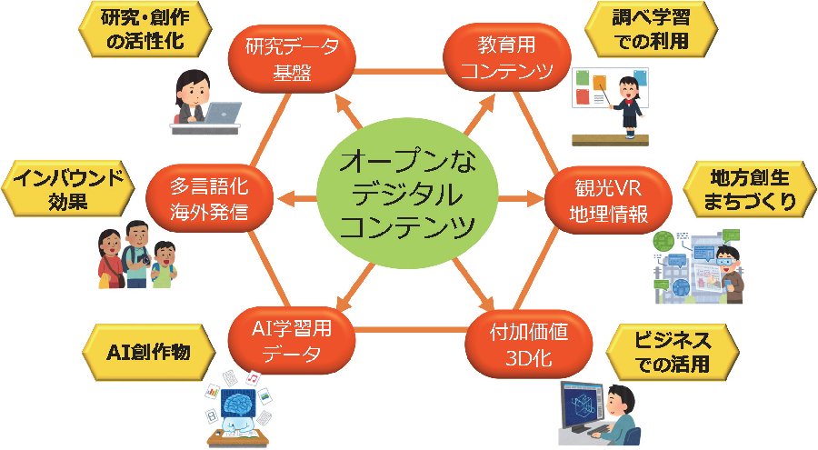
- 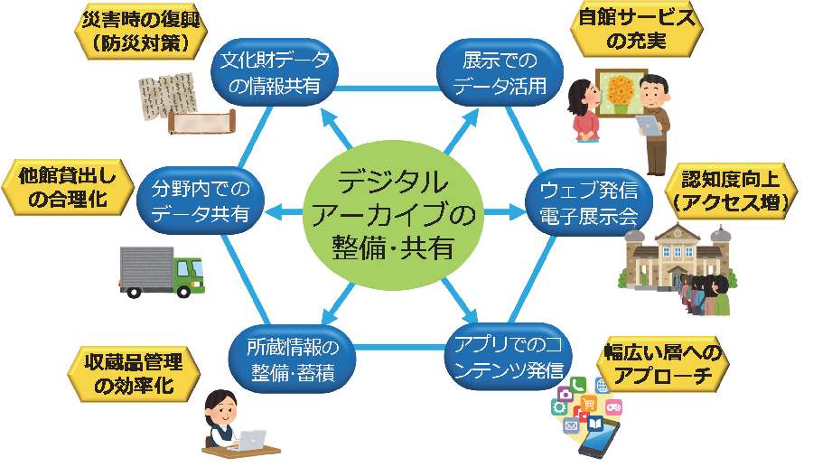
- 第２章 我が国におけるデジタルアーカイブ推進の在り方
- １．「共有」が支えるデジタルアーカイブサイクル
- ２．デジタルアーカイブ社会の構築
- ３．各アーカイブ機関に求められる役割
- （１） 「デジタルアーカイブの構築・共有・活用ガイドライン」の活用
- （２） 人材の確保及び育成
- （３） 評価指標の見直し
- （４） 海外発信の強化
- ４．つなぎ役に求められる役割
- （１） 分野/地方の独自性を反映したポータルの整備・提供
- （２） メタデータの整備推進、 標準化及び用語の統制
- （３） デジタルコンテンツ等のオープン化の推進・二次利用条件の整備、 活用促進の取組
- （４） デジタルコンテンツ拡充及び保存のための技術や法務上の業務支援
- （５） 評価指標の見直しとインセンティブの付与
- （６） 意識啓発・人材育成
- ５． 国や地方自治体等に求められる役割
- （１） デジタルアーカイブの積極的な活用
- （２） 活用コミュニティの形成支援
- （３） 各アーカイブ機関の課題解決支援策等
- （人的・財政的支援措置）
- （技術や法務上の業務支援のための整備）
- （地方における取組の支援）
- 第３章 今後の国の取組の方向性
- （１） 「デジタルアーカイブの構築・共有・活用ガイドライン」の策定
- （２） 国・地方自治体が保有するデジタル情報資源のオープン化推進
- （３）国の統合ポータル構築の取組推進
- （４）デジタルアーカイブ活用促進のためのフォーラムの設置の検討
- （５） つなぎ役の取組支援
- （６） アーカイブ機関の人材教育支援
- （７）アーカイブ機関による取組促進のためのインセンティブの検討
- 第４章 残された論点
- 国家戦略として、 アーカイブ機関の取組をさらに強力にけん引するようなビジョンの構築とその実現のための枠組の継続的な検討が必要
- 国や公的機関が中心となり、 アーカイブ機関が無理なくデータを整備・共有・連携できる共通基盤（プラットフォーム）の構築についての検討を行うことが望まれる
-
-
- デジタルアーカイブ社会のイメージと、 デジタルアーカイブの共有と利活用に向けて
- 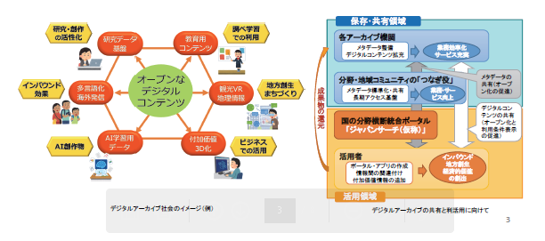
- デジタルアーカイブジャパンの実現に向けた工程表（全体）
- ジャパンサーチ（仮称）における共通メタデータフォーマットの検討の概要
- 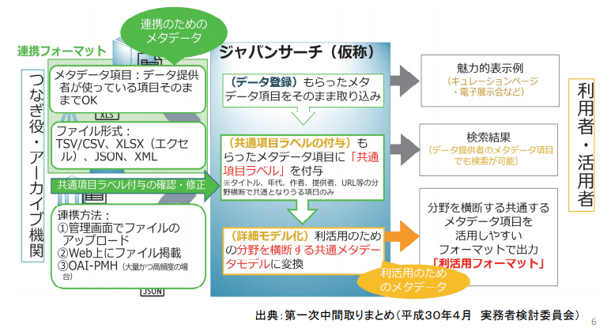
- ジャパンサーチ（仮称）におけるデータ変遷のイメージ
- 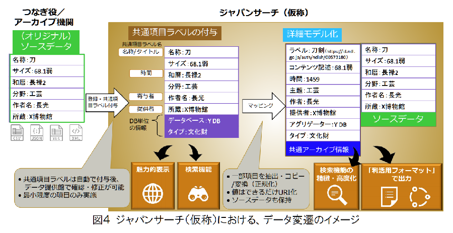
- 「デジタルアーカイブの構築・共有・活用ガイドライン」の概要
- 対象と目的
- 博物館・美術館、 図書館、 文書館、 大学・研究機関、 企業、 官公庁・地方公共団体などの様々なコンテンツを保有する「アーカイブ機関」が、 コンテンツの活用を意識しつつ、 自らのデジタル情報資源の整備・運用のために役立つものとなるよう作成。 併せて、 アーカイブデータを活用する者が留意すべき点及び取り組むべき事項についても提示。
- 本ガイドラインに沿って提供されたメタデータ等によって、 アナログも含めた多様なコンテンツが探索しやすくなり、 観光・学術研究・教育・防災・ビジネスなどの様々な分野における活用が進展することが期待される。
- 本ガイドラインの主な内容

- 【デジタルアーカイブの整備に当たって行うこと】
- コンテンツのメタデータ（目録、 所在情報等）の整備、 デジタルコンテンツの作成・収集 など
- 【データを共有するに当たって行うこと】
- メタデータ、 サムネイル・プレビュー、 コンテンツのオープン化（自由な二次利用が可能）の推進
- メタデータ、 サムネイル・プレビュー、 コンテンツの利用条件の表示を推奨
- メタデータ：CC0
- サムネイル/プレビュー：CC0、 CC BY、 （PDM）
- デジタルコンテンツ：CC0、 CC BY、 （PDM）
- メタデータの共有のため、 表形式データでのウェブ公開のほか、 分野・地域のコミュニティの「つなぎ役」との連携 など
- 【データを活用するに当たって行うこと】
- アーカイブデータの活用者による、 付加価値情報のデータ提供者へのフィードバック、 情報間の関連付け など
- デジタルアーカイブ整備推進法（仮称）
- ＜参考： デジタルアーカイブ整備推進法（仮称）要綱案の骨子＞
- ① 政府によるデジタルアーカイブ振興基本計画の策定と３年毎の見直し
- ② 産官学民によるデジタルアーカイブ推進会議の設置
- ③ 達成目標数値の設定
- ④ 基本計画で規定する基本施策内容：我が国知的資産の統一的な検索、 諸外国デジタルアーカイブとの連携と海外発信、 利活用を促進するための専門的人材養成、 関連技術等調査研究開発、 ナショナルデジタルアーカイブ拠点の設置、 民間主導による利活用促進とデジタルライセンス市場の整備など
- 自民党のデジタルアーカイブジャパン構想推進議員連盟
- 超党派のデジタル文化資産推進議員連盟
-
- 設立総会【2017年4月15日】
- 発足【2017年5月1日】
- 会長：長尾真（京都府公立大学法人 理事長・京都大学名誉教授）
- 会長代行：吉見俊哉（東京大学大学院情報学環 教授）
- 目的
- 21世紀日本のデジタル知識基盤構築のために、 デジタルアーカイブに関わる関係者の経験と技術を交流・共有し、 その一層の発展を目指し、 人材の育成、 技術研究の促進、 メタデータを含む標準化に取り組みます。
- デジタルアーカイブに取り組む諸関連学会、 研究者を繋ぎ、 共通の認識基盤を形成しながらこうした具体的政策課題に取り組む
- 21世紀日本のデジタル知識基盤構築で、 国と自治体、 市民、 企業はいかなる連携体制を組んでいけるのか。
- オープンサイエンスの基盤となる公共的デジタルアーカイブの構築をどう促進するか。
- デジタルアーカイブ人材の育成とキャリアパス構築、 技術的標準化を促進する諸方策とは何か。
- 地域のデジタルアーカイブ構築を支援する体制をどう整えるか。
- さらに、 これらの諸方策の根幹をなすデジタル知識基盤社会の法制度はいかにあるべきか。
- 関連
-
- MANGAナショナル・センター構想に関する有識者会議【2015年9月14日～】
- MANGAの世界的拠点として、 MANGAナショナル・センター構想の検討
- 関連資料の収集・保存及び提供並びに連携拠点機能を有するミュージアムの新設を柱とする
- 国立漫画館、 法整備で推進【2017年5月15日】
- 自民党のクールジャパン戦略推進特命委員会のプロジェクトチーム（ＰＴ）
- ＭＡＮＧＡナショナル・センター構想」
- 漫画やアニメの原画を収集、 保存する国立の新施設建設を法整備で推進する方針を決めた
- 政府の経済財政運営の指針「骨太方針」に盛り込んで２０２０年開館を目指す
- 新施設を国立国会図書館の支部に位置付けると規定。 漫画やアニメに携わる人材育成機能を持たせる。 一定期間の財政措置を国に義務付ける。
- 政府への提言（案）
- 「MANGA（Manga, ANimation and GAme。 以下、 マンガ、 アニメ、 特撮及びゲームを総称して「MANGA」という。 ）は、 「最古の漫画」ともいわれる12世紀頃の鳥獣人物戯画等、 長い歴史に培われた豊かな文化を引き継ぐ、 我が国における代表的な文化産業であり、 高い国際競争力を有するのみならず、 全国各地に約70ものMANGAの拠点が形成されており、 我が国に対する優れた印象を形成することによりインバウンドの促進や地方創生等にも貢献が期待できる。
- 近年、 仏や韓国等の諸外国において我が国のMANGA資料の収集や展示・研究等が進められつつあるなど、 国際的な関心が高まる中で、 オリンピック・パラリンピック2020東京大会に集う世界の人々に向け、 クールジャパンの重要な一翼を担うMANGAによる拠点を形成しおもてなしをする必要がある。 一方、 国内においては、 MANGA関係者の引退等により貴重なコンテンツが散逸し、 海外での評価が高いだけに「第二の浮世絵」との海外流出に懸念する声があがっている。 また地方からは各地の拠点を結ぶハブ(軸)として国の拠点整備の要望も出ている。
- ○ 日本を代表する文化産業であるMANGAに関する、 アーカイブ、 ミュージアム、 人財育成、 産業振興の世界的な情報拠点の構築に向け、 国立国会図書館を中心とした関係機関の連携を強力に推進する。
- 〇 上記の関係機関の連携を踏まえて、 我が国において、 2020年頃を目途に民間活力をも生かして「MANGAナショナル・センター（仮称）」を創設することを目指し、 必要な法制度の整備も含め検討し構想を強力に推進していくとともに、 国立国会図書館を中心とした関係機関に対しても必要な協力を求めていくこととする。 」
- 以上は、 クールジャパン戦略推進特命委員会全体の提言の一つとして、 党内の手続きを経て、 政府に提言されます。 今後、 政府で取りまとめられる「経済財政運営と改革の基本方針(骨太の方針)2017」や、 「日本再興戦略(経済成長戦略)2017」に反映させたいと思っています。
- MANGAナショナル・センター構想の実現に向けての立法措置（案）
- 文化芸術振興基本法の一分野について、 MANGAナショナル・センター構想を特に推進するための措置を国に義務付けるプログラム法をつくる。
- 《法案の構成》
- ＊目的：ナショナル・センター構想の推進を通じて、 国としてMANGA資料のアーカイブを構築するとともに、 産業としてのMANGAの国際競争力を高めて日本経済の成長に資することなど
- ＊定義：MANGAの範囲、 ナショナル・センターの定義など
- ＊基本理念：歴史的・国際的にみたMANGAの文化資源としての重要性など
- ＊国の責務：基本理念にのっとりナショナル・センターの整備を推進する責務など
- ＊法制上の措置等：基本方針に基づいてナショナル・センターの整備を推進するものとし、 一定期間内に必要な法制上、 財政上の措置を講ずべきことなど
- ＊基本方針：
- ・MANGA作品や原画等の中間生成物の幅広い収集による国のアーカイブの構築
- ・国立国会図書館の支部図書館として、 納本制度等を活用して資料を収集
- ・原画等については、 寄贈・寄託を受けることにより収集
- ・関係団体や大学等の教育機関との連携によるMANGAに携わる人材の育成
- ・アーカイブ、 展示、 人材育成等に関する国内外の関連施設との相互連携の強化
- ・アーカイブを活かした展示、 イベント、 関連商品の販売等の実施
- ・イベントホール、 商業施設、 アート・センターの併設
- ・PFI方式の活用など
- ＊計画：MANGA資料のアーカイブの構築に関する計画の策定など
- ＊体制整備：必要な法律案の立案等のための組織の設置など
- ＊施行期日等
- 《過去の類似例》
- ＊特定複合観光施設区域の整備の推進に関する法律（平成28年法律第115号）は、 カジノを含む特定複合観光施設区域の整備の推進について、 基本理念や基本方針を定めるとともに、 政府に対して必要な法整備を、 1年以内を目途に講じる義務を課し、 そのための体制整備を行っている。
- 以上の法整備によって、 国に対してナショナル・センター構想実現に向けた措置を講ずることを義務づけることになります。
-
- 詳細
- その他
-
- 趣旨
- 2014年6月より内閣府、 国土交通省、 文化庁、 大学、 民間研究機関、 企業等、 様々な分野の専門家、 実践者の有志が集まり、 検討を重ねてまいりました「東京文化資源区構想策定調査委員会」が発展する形で新規に組織された
- 上野、 本郷、 谷根千、 神保町、 秋葉原、 神田、 根岸等の特色ある文化を保有する地域を中核とした上野寛永寺から旧江戸城に至る東京都心北部一帯に残り、 育まれているソフト、 ハードあわせた様々な文化資源を活かしたプロジェクトを進めていくことで
- 事業系プログラム
- 歩ける文化資源区の創造
- 文化資源の発掘・再生・活用
- 人材の育成・活動・交流の場の充実
- 基盤整備プログラム
- 文化資源区構想を支える制度の提案
- 文化資源情報の整理・蓄積。 発信
- 地域プログラム
- 集大成として「東京ビエンナーレ」へ
- 日本電子出版協会（JEPA）
- 国立国会図書館による有償の電子書籍・電子雑誌等の収集と閲覧提供についての提案【2017年3月24日JEPA】
- 日本の文化的資産であるデジタル資料を永久に保管する機能と、 国民の知る権利を担保する機能を分けて捉え、 前者は出版者が義務として無償でNDLに納入するものとし、 後者は出版者がNDLにサービスとして有償で提供するものとします
- 資料の収集について
- 各出版者は NDL に対し、 電子配信を行う全ての資料の DRM の無い汎用的形式のデータを、 無償にて納入する 義務を負います。 NDL は納入されたデータを、 商業的な配信が停止されるか著作権が消滅するまでは、 館内閲 覧を含めて一切開示することなく、 後世のためにダークアーカイブとして保管します。 また、 NDL は、 同デー タをナビゲーションに活用し、 公開されている資料への効果的な誘導を実現します。
- 資料の館内閲覧について
- NDL は、 各出版者と話し合い、 適正な価格と条件で利用契約を締結し、 出版社あるいは配信業者を通して上 記の資料を NDL 館内での閲覧に提供します。
- 本提案の目的・狙い
- ・保管されたデータはどこにも開示されないことが担保されるため、 各出版者の了解が得やすい。 また、 論議 のある代償金が不要となり、 無料で収集可能。
- ・配信用の専用形式ではなく DRM などがない汎用形式で保管するため、 技術環境が大きく変わる後世において も閲覧が担保される。 また、 NDL 管理下の設備により確実に保管が可能。
- ・閲覧においては、 各資料に適した機能（検索・リンクなど）や表現（動画・音声など）が可能。
- ・ナビゲーションにおいては、 これまで不可能だった全資料の全文検索を含む様々な検索が可能となり、 文化 的資産の発見が高度に実現する。
- ・結果として、 NDL による保管と閲覧の双方が強力に推進される。
-
- DX時代における図書館サービスイメージ
- 社会の知識インフラの中核として
- デジタルアーカイブは、 「知の共有化」のデジタルトランスフォーメーション（DX）
- 電子図書館の目指してきたところは、 昨今の「Society5.0」が目指してきた方向性と同じ。 更に、 デジタルアーカイブは文化資源を保有する組織、 その資源を利活用する組織のデジタルトランスフォーメーションそのもの。
- 未来の図書館の実現に向けて
- Society5.0
- サイバー空間とフィジカル空間を高度に融合させることにより、 多様なニーズにきめ細かに対応したモノやサービスを提供し、 経済的発展と社会的課題の解決を両立する
- Society5.0では、 サイバー空間とフィジカル空間を高度に融合させることにより、 多様なニーズにきめ細かく対応したモノやサービスを提供し、 経済的発展と社会的課題の解決を両立させる世界
- Society5.0に向けて、 様々なつながりによる新たな価値社会を創出するConnected Industriesの実現に向けた新たな産業構造の構築が必要
- Connected Industory
- Society5.0へ向けて、 様々なつながりによる新たな付加価値を創出する
- デジタルトランスフォーメーション時代の知識インフラの構築
- あらゆる分野、 業種業態を越えた情報資源を一元的に利用できるアーカイブ
- Society5.0にマッピングした図書館サービス
- 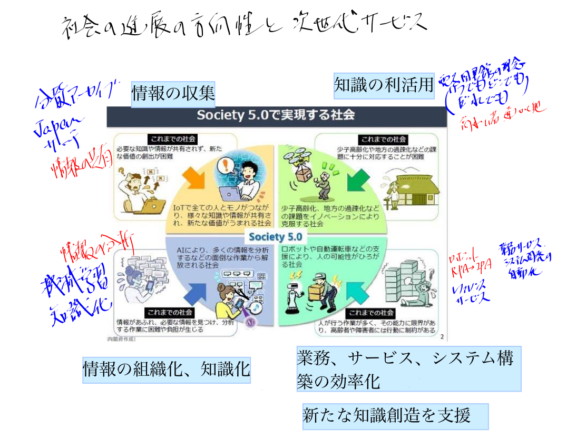
- ナレッジプラットフォームfor SDGs【 知的財産戦略ビジョンより】
- 次世代のコンテンツ創造・活用システムの構築【 知的財産戦略ビジョンより】
- 公共図書館等のシステム構成イメージ
- サイバー・フィジカル・システム（CPS）

- 図書館関連機関が保有しているビッグデータとしての知的情報資源
- 従来から図書館員の知識・ノウハウにより統制され形式知化してきた情報
- 情報に関する情報⇒メタデータ
- 書誌情報
- 情報を見つけ出すための情報⇒ナレッジデータベース
- レファレンス情報（参考情報）
- Q&A
- 調べ方案内情報
- 情報資源⇒デジタルアーカイブ
- 今後ビッグデータとして活用が可能になっている情報
- デジタルアーカイブ内で保有している情報で、 オープンデータ化されていない情報も含めて、 バックヤードで検索・分析に活用できる本文フルテキスト
- 著作権者の許諾なしに書籍の全文を電子データ化し、 検索のために人工知能などを活用した新サービスが認められた
- 図書館等から一定期間公開しない有償オンライン資料、 東日本大震災アーカイブ等も検索のためには活用できる？
- 今後活用を期待したい情報
- 図書館が保有するオープンデータ化された情報の内容（コンテンツ）
- 図書館の世界でのデジタルアーカイブ
- 図書館の枠を越えたナショナルアーカイブ内の情報、 情報の内容（コンテンツ）
- 図書館員が持つノウハウ等の暗黙知
- レファレンス業務過程情報を形式知化
- 図書館情報システムから収集する情報
- 匿名化の加工をした利用情報
- 利用実績情報（統計化されてない情報）
- 各種センサー等のIoT機器から収集する情報
- 利用行動履歴
- 利用した情報の移動履歴
- 研究データ
- ナショナルアーカイブの方向性
- 知識インフラ構築における最も大切な概念は、 情報を集め、 これを知識化し活用することによって新しい情報・知識を創出し、 知識インフラに加えるという形で循環的にこのシステムを強化・拡大してゆくことによって社会・経済に貢献することである。 【長尾先生】
- 知識が種々の観点から組織化、 構造化されて利用しやすい形で蓄積されて利用に供される【長尾先生】

- 次世代の図書館サービスの業務と、 業務に従事する人材の資質とスキルは？
- 人工知能と人間の能力と役割（一般論）
- 人工知能が果たす役割・機能
- 不足している労働力を補完する
- 既存の労働力を省力化する
- 既存の業務効率・生産性を高める
- 既存の業務の提供する価値（品質や顧客満足度など）を高める
- これまでに存在しなかった新しい価値をもった業務を創出する
- 既存の業務に取組む意欲や満足度を高める
- 新しい業務に取組む意欲や満足度を高める
- その他
- 人工知能（AI）の活用が一般化する時代における人の重要な能力
- 情報収集能力や課題解決能力、 論理的思考などの業務遂行能力
- チャレンジ精神や主体性、 行動力、 洞察力などの人間的資質
- 企画発想力や創造性
- 語学力や理解力、 表現力などの基礎的素養
- コミュニケーション能力やコーチングなどの対人関係能力

- ルーティンワーク、 マニュアル化された仕事は、 アルバイト、 非常勤、 外部委託、 そして人工知能に置き換わる
- ビジネスプロセスにおける業務とシステムの役割分担の見直し
- AIの実用段階に達した今、 今まで人が担ってきた部分の作業も、 精密化すると一部が人工知能を活用したほうが効率的なことが多々ある
- 図書館員の役割と資質
- Librarian, cataloguers, reference librarian, Embedded librarian
- 人工知能により自動出力された内容の評価、 補正
- 選書
- 関連付けに必要な典拠類の構築
- 情報に関する基本情報付け（メタデータ付与）
- 情報に関する付加価値情報付け
- 情報間の関連付け
- 分類・主題情報の付与
- 人工知能を活用したレファレンス
- 集いの場（intellectual commons）の運営
- 研究グループの中に図書館的業務のできる人を置くことが必要。 embedded librarian（研究協力図書館員）と呼ぶようになって来た。 【長尾先生】
- 情報化推進部門

- l .ビジネスの旗振り役2 ディ－プラ一二ングの技術者、 データサイ工ンテイスト3. モデルを組み込んだシステムを作る工ンジ二ア4. ビジネスと工ンジ二ア、 データサイ工ンテイストの橋渡し役
- 図書館サービスの構築・運用に従事する人に必要な知識とスキルは？
- 一気に人工知能に置き換わらなくても、 少なくとも職員から、 アルバイト、 非常勤、 外部委託へとシフトしていくものが多い。 その中で図書館職員としての仕事を見極める必要がある
- 図書館情報システムに係わる人材に必要な知識とスキル
- 図書館システムの構築に必要な知識とスキル
- AIシステムの回答精度を上げるための知識とスキル
- 図書館情報システムを活用したサービスの運用に必要な知識とスキル
- 場としての図書館
- 対人関係能力
- 知識情報保有機関としての図書館
- AIシステムに的確な情報をインプットするための知識とスキル
- 一般的な情報化推進部門
- 網羅的なスキル構成
- メソドロジ
- ITビジネス活動の様々な局面で発揮される手法、 方法などで、 発揮される対象領域が広く、 汎用性、 応用性が高いスキルカテゴリ
- テクノロジ
- ITビジネス活動の様々な局面で発揮されるIT関連技法などで、 対象領域が特定されるものが多いスキルカテゴリ
- 関連業務知識
- ITビジネス活動の様々な局面で活用される、 メソドロジ、 テクノロジ以外の関連業務知識。 業務固有のスキル。
- ITヒューマンスキル
- 企業・組織が IT に関するタスクを実行する際に必要となるスキル。 人工知能が実用化される状況において、 人間として特に重要なスキル。
- 実行力・実践力
- 俯瞰力・深耕力・革新力・継続力
- 効果を上げるために、 実行・実践環境や状況を適切に捉える力
- 効果的継続の実行と新しい取り組みや新領域へ挑戦する力
- 創造力
- 問題発見力・問題分析力・仮説設定力・論理思考力・概念化力
- 状況を認知して問題を発見し、 見極め、 解決案を策定する「価値の創造・問題解決」を着実に遂行する力
- 複雑な状況や問題に対して、 論理的思考により概念の形成、 判断の構築、 命題設定を行う力
- コミュニケーション力
- 自分の考えを伝える力・相手の考え方を理解する力・共感を呼ぶ力
- 情報の獲得や更なる情報の要求や内容の確認、 他者への情報提供、 他者に影響を与えたり、 協働への引導する力
-
- 一般的なシステム構築のタスク
- 戦略
- 事業戦略把握・策定支援
- 要求（構想）の確認
- 新ビジネスモデルへの提言
- 事業戦略の実現シナリオへの提言
- IT製品・サービス戦略策定
- 市場動向の調査・分析・予測
- IT製品・サービス戦略の策定
- 企画
- IT戦略策定・実行推進
- 基本方針の策定
- IT化計画の策定
- IT戦略実行マネジメント
- システム企画立案
- システム化構想の立案
- システム化計画の策定
- 業務・システム要件定義
- ITサービス要件定義
- 情報セキュリティ要件定義
- 開発
- システム要件定義・方式設計
- 運用設計
- 移行設計
- 基盤システム構築
- アプリケーションシステム開発
- ソフトウェア製品開発
- Webサイト開発
- システムテスト
- 移行・導入
- ソフトウェア保守
- ハードウェア・ソフトウェア製品導入
- ファシリティ設計・構築
- プロジェクトマネジメント
- 利活用
- サービスデスク
- IT運用コントロール
- システム運用管理
- Webサイト運用管理
- ファシリティ運用管理
- サービスマネジメント
- 評価・改善
- システム評価・改善
- IT戦略評価・改善
- IT製品・サービス戦略評価・改善
- 事業戦略評価・改善支援
- システム監査
- 資産管理・評価
- 管理・統制
- システム監査
- 資産管理・評価
- 事業継続マネジメント
- 情報セキュリティマネジメント
- 品質マネジメント
- 契約管理
- コンプライアンス
- 人的資源管理
- 推進・支援
- マーケティング・セールス
- 再利用
- 再利用資産管理
- 再利用資産管理の準備
- ソフトウェア開発プロセスの標準化手法
- ソフトウェアエンジニアリングの標準化手法
- 論理思考力
- 概念化力
- 自分の考えを伝える力
- 再利用資産の保管と管理
- ソフトウェア開発プロセスの標準化手法
- ソフトウェアエンジニアリングの標準化手法
- 論理思考力
- 継続力
- 共感を呼ぶ力
- 再利用施策管理
- 再利用施策の計画
- ソフトウェア開発プロセスの標準化手法
- ソフトウェアエンジニアリングの標準化手法
- 問題分析力
- 仮説設定力
- 概念化力
- 共感を呼ぶ力
- 再利用施策の実施
- ソフトウェア開発プロセスの標準化手法
- ソフトウェアエンジニアリングの標準化手法
- 問題分析力
- 仮説設定力
- 革新力
- 調達・委託
- 標準の策定・維持・管理
- 新ビジネス・新技術の調査・分析と技術支援
- 業務
- ビジネス目標の決定
- 状況の評価
- 目標の決定とプロジェクト計画の策定
- データの理解
- データマイニングのためのデータの準備
- モデリング
- モデリング手法の選択
- テスト設計
- モデルの構築
- モデルの評価
- 評価
- 結果とモデルの展開
- 開発タスクとドキュメント
- 業務タスクとスキル・知識の蓄積のスキーム
- iコンピテンシ・ディクショナリを活用した業務の遂行とスキル・知識の選択的習得方法
- 資料編
- メイン資料
- サブ資料
-
-
- DAX40-01 はじめに（目次）
- DAX40-02 電子図書館サービスの始動
- DAX40-03 電子図書館サービスから知識インフラの構築へ
- DAX40-04 ICTの急速な発展と図書館を取り巻くサービスの変革
- DAX40-05 「知の共有化」の実現を目指した構想【2013年】
- DAX40-06 「知の共有化」システムの標準的な構築プロセスと必要なスキル・知識
- DAX40-10 【2019年】今後10年の図書館を取り巻く環境の社会環境の変化と図書館サービスシステムの方向性
- DAX40-20 【課題テーマ】今後の図書館サービスシステムの構築を考える
- 図表（PDF拡大可能版）
- 「知の共有化」に関連した国等の政策の要約
- 次世代システム開発
- AI白書
-
- まとめ資料
- DAX40-10 【2019年】今後10年の図書館を取り巻く環境の社会環境の変化と図書館サービスシステムの方向性
- 詳細資料
- Bib10-08「知の共有化」に関連した国等の政策の要約
- DAX21_デジタルトランスフォーメーション（DX）
- DAX43-90知の共有化に関連するキーワードと関連
- キーワード
- 国の政策
- DAX22-01 AI・データの利用に関する契約ガイドライン（概要資料）
- DAX25-20-00【書籍】 AI白書2019_目次
- DAX25-20-04【書籍】 AI白書2019_第4章制度政策動向
- 参考資料部分
- DAX25-30【書籍】いまこそ知りたいAIビジネス
- 課題
- 今後5～10年の社会の進展の方向性を認識
- 社会の進展に合わせた図書館サービスシステムが持つべき要件を想定
-
-